Chapter 2: Quantum Gates, Circuits & Protocols¶
This chapter turns the foundations into working tools. It covers every important single- and multi-qubit gate with its matrix, universal gate sets and the Solovay-Kitaev theorem, how to read and measure circuits, and dynamic circuits with mid-circuit measurement and feed-forward. It then builds Bell, GHZ and W states, teleportation, superdense coding and phase kickback, introduces density matrices and noise channels, explains how compilers fit circuits onto real chips, and closes with the alternative models: measurement-based, adiabatic and annealing.
2.1 Single-Qubit Gates I: The Paulis (X, Y, Z) and the Hadamard¶
Gates are the operations of a quantum program. The three Pauli gates are the simplest: X flips |0⟩ and |1⟩ (a quantum NOT), Z flips the sign of |1⟩ (a phase flip), and Y does both with an extra factor of i. The Hadamard gate H turns |0⟩ and |1⟩ into equal superpositions and back — it is the most-used gate in quantum computing.
X, Z and H at a glance
| X (NOT) | Z (phase flip) | H (Hadamard) | |
|---|---|---|---|
| Matrix | [[0,1],[1,0]] | [[1,0],[0,−1]] | 1/√2 [[1,1],[1,−1]] |
| |0⟩ → | |1⟩ | |0⟩ | |+⟩ |
| |1⟩ → | |0⟩ | −|1⟩ | |−⟩ |
| |+⟩ → | |+⟩ | |−⟩ | |0⟩ |
| Bloch action | 180° about X | 180° about Z | 180° about (X+Z)/√2 |
| Classical analogue | NOT | none | none |
X and Z swap roles when sandwiched between Hadamards.
Think of it like…
On the Bloch globe, X, Y and Z are half-turns of the globe around its three axes, while H is a half-turn around a tilted axis halfway between the X and Z axes, swapping the poles with the equator.
Real-world example
Diego checks the gate identities by multiplying matrices: X = [[0,1],[1,0]], Z = [[1,0],[0,−1]], H = 1/√2 [[1,1],[1,−1]]. He finds H·X·H = Z and H·Z·H = X, so a Hadamard 'sandwich' converts bit flips into phase flips. He later uses this to turn a CNOT into a CZ when compiling for hardware that only offers CZ.
How it works¶
- X = [[0,1],[1,0]]: X|0⟩ = |1⟩, X|1⟩ = |0⟩ — a 180° rotation about the X axis.
- Z = [[1,0],[0,−1]]: Z|0⟩ = |0⟩, Z|1⟩ = −|1⟩ — a 180° rotation about Z; it maps |+⟩ ↔ |−⟩.
- Y = [[0,−i],[i,0]]: Y|0⟩ = i|1⟩, Y|1⟩ = −i|0⟩; Y = iXZ — a 180° rotation about Y.
- H = 1/√2 [[1,1],[1,−1]]: H|0⟩ = |+⟩, H|1⟩ = |−⟩; H is its own inverse (H·H = I).
- Each of X, Y, Z and H squares to the identity, so applying any of them twice does nothing.
Who uses it
Every quantum programmer uses these gates; interviewers routinely ask for their matrices and their action on |0⟩, |1⟩, |+⟩ and |−⟩.
Key takeaway
Memorise the conjugation rules: HXH = Z, HZH = X, HYH = −Y — they let you change measurement basis and convert between CNOT and CZ.
Going deeper
- The Paulis satisfy XY = iZ, YZ = iX, ZX = iY and anticommute pairwise (XZ = −ZX); with I they form a basis, so any 2×2 matrix is a combination aI + bX + cY + dZ.
- The n-qubit Pauli group consists of tensor products such as X⊗Z⊗I with phases ±1, ±i; Pauli strings like 'XZI' describe observables, Hamiltonian terms and error-correction stabilisers.
- On IBM Heron hardware X is a native calibrated pulse and Z is implemented virtually by phase-frame updates, while H is compiled into RZ(π/2)·SX·RZ(π/2) up to global phase.
- The √X gate (SX = ½[[1+i, 1−i],[1−i, 1+i]]) is a 90° X rotation; together with RZ it is the single-qubit native set on IBM machines.
- Errors are often described as random Pauli operators: an X error is a bit flip, a Z error a phase flip and a Y error both, which is why Pauli algebra underpins error correction.
- H^⊗n maps |x⟩ to 1/√(2^n) Σ_y (−1)^(x·y)|y⟩, the Walsh-Hadamard transform used by Deutsch-Jozsa, Bernstein-Vazirani and Simon's algorithms.
Common mistakes & misconceptions
- Calling Z 'useless' because it does not change Z-basis probabilities: it flips phase, which changes results after any basis change.
- Mixing up Y = [[0,−i],[i,0]] with iXZ sign conventions; check with Y = iXZ.
- Thinking H is a 90° rotation: it is a 180° rotation about the diagonal X+Z axis.
Try it: Print the Pauli and Hadamard matrices and verify HXH = Z (Qiskit 2.x)¶
from qiskit.circuit.library import XGate, YGate, ZGate, HGate
from qiskit.quantum_info import Operator
for g in (XGate(), YGate(), ZGate(), HGate()):
print(g.name, Operator(g).data.round(3).tolist())
H, X, Z = Operator(HGate()), Operator(XGate()), Operator(ZGate())
print(H.compose(X).compose(H).equiv(Z)) # True
Key concepts, algorithms, hardware, tools & milestones¶
| Name | What it does | Example |
|---|---|---|
| Identity gate (I) Pauli group · Gate · Current · Beginner |
I = [[1,0],[0,1]]: leaves the qubit unchanged; on hardware it can mean 'wait one gate time'. | IBM backends list 'id' as a native instruction used for idle timing in characterisation experiments. |
| Pauli-X (NOT) Pauli matrices · Gate · Current · Beginner |
X = [[0,1],[1,0]]: swaps |0⟩ and |1⟩; a 180° rotation about the X axis. | Preparing |1⟩ for a readout calibration uses one X gate on a qubit starting in |0⟩. |
| Pauli-Y Pauli matrices · Gate · Current · Beginner |
Y = [[0,−i],[i,0]] = iXZ: flips the bit and the phase together; a 180° rotation about Y. | Y|0⟩ = i|1⟩, which gives the same probabilities as X|0⟩ but a different phase. |
| Pauli-Z (phase flip) Pauli matrices · Gate · Current · Beginner |
Z = [[1,0],[0,−1]]: multiplies |1⟩ by −1; a 180° rotation about Z. | Z turns |+⟩ into |−⟩; Grover's oracle is a multi-qubit version marking one bitstring with −1. |
| Hadamard (H) Named after Jacques Hadamard's matrices · Gate · Current · Beginner |
H = 1/√2 [[1,1],[1,−1]]: maps |0⟩→|+⟩ and |1⟩→|−⟩, switching between Z and X bases. | Most algorithms begin with a layer of H gates to create a uniform superposition. |
| √X (SX) gate IBM native gate · Gate · Current · Intermediate |
SX = ½[[1+i, 1−i],[1−i, 1+i]]: half of an X gate, a 90° rotation about X. | Two SX pulses in a row equal one X; IBM compiles any single-qubit gate into RZ and SX. |
| Pauli group Group theory · Math · Intermediate |
All n-qubit tensor products of I, X, Y, Z with phases ±1, ±i; closed under multiplication. | For 2 qubits the Pauli group has 4 × 16 = 64 elements, such as −iX⊗Y. |
| Pauli strings Qiskit SparsePauliOp, OpenFermion · Concept · Current · Intermediate |
Labels such as 'ZZI' or 'XIX' naming tensor products of Paulis, used for observables and Hamiltonians. | A molecule's Hamiltonian may be a sum of hundreds of Pauli strings with real coefficients. |
| Anticommutation Pauli algebra · Math · Intermediate |
Distinct Paulis anticommute (XZ = −ZX); moving one past another flips a sign, central to stabiliser theory. | An X error anticommutes with a Z-type stabiliser, flipping its measured value and revealing the error. |
| Hadamard conjugation rules Circuit identities · Concept · Beginner |
HXH = Z, HZH = X and HYH = −Y: Hadamards swap the X and Z roles of other gates. | Compilers replace CNOT with H(target)·CZ·H(target) on hardware that natively supports CZ. |
| Walsh-Hadamard transform H^⊗n · Math · Advanced |
Hadamards on all n qubits; maps |x⟩ to a signed uniform superposition with signs (−1)^(x·y). | Bernstein-Vazirani reads a hidden 8-bit string s in one query by applying H^⊗8 after a phase oracle. |
| Pauli error model Quantum error correction · Concept · Current · Intermediate |
Describing noise as random X, Y or Z errors; any single-qubit error is a combination of these. | A surface-code simulation injects X and Z errors at 0.1% per gate to estimate logical error rates. |
2.2 Single-Qubit Gates II: Phase Gates (S, T, P) and Rotations (RX, RY, RZ, U)¶
Phase gates leave |0⟩ alone and twist the phase of |1⟩: S by 90°, T by 45°, and the general phase gate P(φ) by any angle φ. Rotation gates RX(θ), RY(θ) and RZ(θ) turn the Bloch arrow by any angle about an axis. With rotations you can reach any single-qubit state, and the general U(θ, φ, λ) gate packs every single-qubit gate into three numbers.
Think of it like…
If the Paulis are 'half-turn' buttons, rotation gates are dimmer dials: you can turn the qubit's arrow by exactly the angle you need, such as 37°, not just 180°.
Real-world example
Elena needs a qubit with a 25% chance of reading 1. She solves sin²(θ/2) = 0.25, so θ = 60°, and applies RY(π/3) = [[cos 30°, −sin 30°],[sin 30°, cos 30°]] to |0⟩, giving 0.866|0⟩ + 0.5|1⟩. On 4,000 shots she gets about 1,000 ones. Her variational circuit later tunes dozens of such angles automatically.
How it works¶
- S = [[1,0],[0,i]] (90° about Z); T = [[1,0],[0,e^(iπ/4)]] (45° about Z); S = T², Z = S².
- P(φ) = [[1,0],[0,e^(iφ)]] generalises them: P(π) = Z, P(π/2) = S, P(π/4) = T.
- RZ(θ) = [[e^(−iθ/2),0],[0,e^(iθ/2)]] equals P(θ) up to a global phase; RX and RY rotate about X and Y.
- RY(θ) = [[cos θ/2, −sin θ/2],[sin θ/2, cos θ/2]] is real-valued and sets measurement probabilities directly.
- Any single-qubit gate is U = e^(iα)·RZ(β)·RY(γ)·RZ(δ) (ZYZ Euler decomposition) — the basis of U(θ, φ, λ).
Who uses it
Variational-algorithm developers, compiler engineers and pulse-level hardware engineers work with parameterised rotations every day.
Key takeaway
Know why T matters: Clifford gates (H, S, CNOT) alone are classically simulable; adding the T gate makes the set universal — and on error-corrected machines T is the expensive gate.
Going deeper
- RX(θ) = [[cos θ/2, −i sin θ/2],[−i sin θ/2, cos θ/2]] and in general R_n(θ) = e^(−iθ n·σ/2); the half-angles mean a 2π rotation gives −I, a global phase.
- OpenQASM 3 and Qiskit define U(θ, φ, λ) = [[cos(θ/2), −e^(iλ) sin(θ/2)],[e^(iφ) sin(θ/2), e^(i(φ+λ)) cos(θ/2)]]; U(π/2, 0, π) = H and U(π, 0, π) = X.
- Hardware typically decomposes any single-qubit gate as RZ·SX·RZ·SX·RZ, so only one or two physical pulses are needed and the RZs are free virtual phase updates.
- On fault-tolerant machines arbitrary RZ angles must be approximated by Clifford+T sequences; Ross-Selinger synthesis uses about 3·log2(1/ε) T gates, roughly 100 for ε = 10^-10.
- The quantum Fourier transform needs controlled phases P(2π/2^k); approximate QFT drops angles below about 2π/2^(log n + c) with negligible accuracy loss.
- IBM Heron processors offer fractional RX(θ) and RZZ(θ) gates (enabled with use_fractional_gates=True), which can halve the duration and error of arbitrary-angle rotations.
Common mistakes & misconceptions
- Treating RZ(θ) and P(θ) as different physics: they differ only by a global phase e^(−iθ/2), though that matters once controlled.
- Forgetting the θ/2 in rotation matrices, which doubles or halves intended angles.
- Assuming every angle is cheap: on error-corrected hardware, non-Clifford rotations cost many T gates.
Try it: Rotation gates and the U gate (Qiskit 2.x)¶
import numpy as np
from qiskit import QuantumCircuit
from qiskit.quantum_info import Statevector, Operator
from qiskit.circuit.library import TGate, SGate, UGate
qc = QuantumCircuit(1); qc.ry(np.pi/3, 0)
print(Statevector(qc).probabilities()) # [0.75, 0.25]
print(Operator(TGate()).power(2).equiv(Operator(SGate()))) # True: T^2 = S
print(Operator(UGate(np.pi/2, 0, np.pi)).data.round(3)) # = H
Key concepts, algorithms, hardware, tools & milestones¶
| Name | What it does | Example |
|---|---|---|
| S gate (√Z) Clifford group · Gate · Current · Beginner |
S = [[1,0],[0,i]]: 90° phase on |1⟩; maps |+⟩ to |+i⟩. | Measuring in the Y basis applies S† then H before the standard Z measurement. |
| S† (sdg) Clifford group · Gate · Current · Beginner |
S† = [[1,0],[0,−i]]: the inverse of S, a −90° Z rotation. | Qiskit's qc.sdg(0) undoes qc.s(0); S·S† = I. |
| T gate (π/8 gate) Clifford+T set · Gate · Current · Beginner |
T = [[1,0],[0,e^(iπ/4)]]: 45° phase on |1⟩; the standard non-Clifford gate for universality. | A fault-tolerant Toffoli needs 7 T gates, each requiring a distilled or cultivated magic state. |
| T† (tdg) Clifford+T set · Gate · Current · Beginner |
T† = [[1,0],[0,e^(−iπ/4)]]: the inverse of T, used alongside T in synthesis. | The standard Toffoli decomposition alternates T and T† on three qubits around six CNOTs. |
| Phase gate P(φ) Qiskit 'p', OpenQASM 3 · Gate · Current · Beginner |
P(φ) = [[1,0],[0,e^(iφ)]]: any phase on |1⟩; P(π) = Z, P(π/2) = S, P(π/4) = T. | The QFT applies controlled-P(π/2), P(π/4) … between qubit pairs. |
| RX(θ) Rotation about X · Gate · Current · Beginner |
RX(θ) = [[cos θ/2, −i sin θ/2],[−i sin θ/2, cos θ/2]]: turns the Bloch arrow by θ about the X axis. | RX(π) equals X up to global phase −i; RX(π/2) equals SX up to a global phase. |
| RY(θ) Rotation about Y · Gate · Current · Beginner |
RY(θ) = [[cos θ/2, −sin θ/2],[sin θ/2, cos θ/2]]: real-valued rotation; sets P(1) = sin²(θ/2) from |0⟩. | Hardware-efficient VQE ansätze stack layers of RY(θ_i) on every qubit plus CNOT or CZ entanglers. |
| RZ(θ) Rotation about Z · Gate · Current · Beginner |
RZ(θ) = [[e^(−iθ/2),0],[0,e^(iθ/2)]]: phase rotation; often implemented virtually with zero error. | IBM and Google compilers push all phase information into RZ gates because they are 'free'. |
| U(θ, φ, λ) gate OpenQASM 3 / Qiskit (formerly U3) · Gate · Current · Intermediate |
General single-qubit gate defined by three Euler angles; any single-qubit unitary up to global phase. | U(π/2, 0, π) = H; U(θ, −π/2, π/2) = RX(θ). |
| Euler (ZYZ) decomposition Nielsen & Chuang, Theorem 4.1 · Math · Intermediate |
Any single-qubit unitary equals e^(iα)·RZ(β)·RY(γ)·RZ(δ) for real angles α, β, γ, δ. | Qiskit's OneQubitEulerDecomposer rewrites long single-qubit runs into at most three rotations. |
| Parameterised gate Qiskit Parameter, Cirq sympy symbols · Concept · Current · Beginner |
A gate whose angle is a symbol bound later, so one compiled circuit can run with many values. | A QAOA circuit with parameters γ and β is transpiled once, then executed for 200 parameter sets. |
| Fractional gates IBM Heron (use_fractional_gates=True) · Gate · Emerging · Advanced |
Native arbitrary-angle RX(θ) and RZZ(θ) (0 < θ ≤ π/2) avoiding decomposition into several fixed gates. | A Hamiltonian-simulation circuit runs with fewer pulses because each RZZ(θ) is one gate instead of two CZs. |
| Clifford hierarchy Gottesman and Chuang, 1999 · Concept · Advanced |
Levels of gates: Paulis, then Cliffords (H, S, CNOT), then T and Toffoli at level three, and so on. | Higher-level gates can be performed by gate teleportation using lower-level gates plus special resource states. |
2.3 Multi-Qubit Gates: CNOT, CZ, SWAP, iSWAP, Toffoli and Controlled-U¶
Gates acting on two or more qubits create entanglement and let qubits influence each other. The CNOT flips a target qubit only when a control qubit is 1. CZ adds a minus sign when both qubits are 1. SWAP exchanges two qubits, Toffoli is a doubly-controlled NOT, and any gate U can be turned into a controlled-U that acts only when a control is 1.
Think of it like…
A CNOT is like a light switch wired through a master switch: flipping the master (control) decides whether the room switch (target) toggles. A SWAP is two people trading seats.
Real-world example
Grace compiles a circuit for a superconducting chip that only offers CZ. Every CNOT becomes H on the target, CZ, then H on the target again. A SWAP needed to move data between distant qubits costs three CNOTs, so routing one long-range CNOT across two hops adds six extra two-qubit gates and roughly doubles the error of that step.
How it works¶
- CNOT (control q0, target q1, textbook ordering) = [[1,0,0,0],[0,1,0,0],[0,0,0,1],[0,0,1,0]]: |x, y⟩ → |x, x⊕y⟩.
- CZ = diag(1, 1, 1, −1): symmetric in its two qubits; CNOT = (I⊗H)·CZ·(I⊗H).
- SWAP = [[1,0,0,0],[0,0,1,0],[0,1,0,0],[0,0,0,1]] = three alternating CNOTs; iSWAP = [[1,0,0,0],[0,0,i,0],[0,i,0,0],[0,0,0,1]].
- Toffoli (CCX) flips the target only when both controls are 1; it decomposes into 6 CNOTs and 7 T/T† gates.
- Controlled-U = |0⟩⟨0| ⊗ I + |1⟩⟨1| ⊗ U; any two-qubit gate needs at most 3 CNOTs plus single-qubit gates.
Who uses it
Compiler engineers, hardware physicists (who calibrate two-qubit gates) and algorithm developers all care most about two-qubit gate count and fidelity.
Key takeaway
Two-qubit gates dominate error budgets — typically 5-20× more error-prone than single-qubit gates — so 'two-qubit gate count' is the first metric to minimise.
Going deeper
- Any two-qubit unitary can be written with at most three CNOTs using the KAK (Cartan) decomposition, U = (A1⊗A2)·exp(i(aXX + bYY + cZZ))·(B1⊗B2).
- Hardware entanglers differ: IBM Heron uses CZ via tunable couplers (earlier Eagle used echoed cross-resonance, ECR), Google uses CZ, trapped ions use Mølmer-Sørensen or ZZ-type interactions, and neutral atoms use Rydberg-blockade CZ.
- Best reported two-qubit fidelities in 2025 were about 99.9% on trapped ions (Quantinuum Helios 99.921%) and roughly 99.5-99.9% on leading superconducting chips.
- An n-controlled X can be built from O(n) Toffolis with ancillas, or without ancillas at higher cost; Qiskit's MCXGate offers several synthesis methods with different CNOT counts.
- A CNOT's 'direction' is a convention: (H⊗H)·CNOT·(H⊗H) swaps control and target, and CZ is symmetric, so the distinction disappears on CZ-native hardware.
- Google's fSim(θ, φ) family covers iSWAP-like and CZ-like gates in one parameterisation; Sycamore's 2019 experiment used an fSim gate close to √iSWAP plus a small conditional phase.
Common mistakes & misconceptions
- Assuming CNOT is always native: most hardware implements CZ, ECR, MS or RZZ, and CNOT costs extra single-qubit gates.
- Forgetting that a 'classical-looking' gate like CNOT creates entanglement when the control is in superposition.
- Underestimating Toffoli cost: on error-corrected hardware its 7 T gates dominate many algorithms' runtimes.
Try it: CNOT from CZ, SWAP from three CNOTs, and Toffoli's cost (Qiskit 2.x)¶
from qiskit import QuantumCircuit, transpile
from qiskit.quantum_info import Operator
cz_cnot = QuantumCircuit(2); cz_cnot.h(1); cz_cnot.cz(0, 1); cz_cnot.h(1)
ref = QuantumCircuit(2); ref.cx(0, 1)
print(Operator(cz_cnot).equiv(Operator(ref))) # True
tof = QuantumCircuit(3); tof.ccx(0, 1, 2)
print(transpile(tof, basis_gates=['cx','h','t','tdg']).count_ops())
# 6 cx, 7 t/tdg in total, plus h
Key concepts, algorithms, hardware, tools & milestones¶
| Name | What it does | Example |
|---|---|---|
| CNOT (CX) Controlled-NOT · Gate · Current · Beginner |
Flips the target qubit when the control is |1⟩: |x, y⟩ → |x, x⊕y⟩; the standard entangling gate. | H on qubit 0 followed by CNOT(0→1) turns |00⟩ into the Bell state (|00⟩ + |11⟩)/√2. |
| CZ (controlled-Z) Native on IBM Heron, Google Willow, neutral atoms · Gate · Current · Beginner |
CZ = diag(1,1,1,−1): adds a minus sign only to |11⟩; symmetric between its two qubits. | Rydberg-atom processors from QuEra and others implement CZ through the Rydberg blockade. |
| SWAP Routing primitive · Gate · Current · Beginner |
Exchanges two qubits' states; equals three alternating CNOTs, so it is costly on hardware. | On a line of qubits, a CNOT between qubits 0 and 3 needs two SWAPs first. |
| iSWAP and √iSWAP Superconducting native gates (e.g., Rigetti, Google) · Gate · Current · Intermediate |
iSWAP swaps |01⟩ and |10⟩ adding a phase i; √iSWAP is half of that, a natural gate for coupled transmons. | Two √iSWAP gates plus single-qubit rotations can build a CNOT. |
| ECR gate IBM Eagle processors · Gate · Legacy · Advanced |
Echoed cross-resonance: IBM's native two-qubit gate on fixed-frequency transmons, equivalent to CNOT up to single-qubit gates. | Circuits for ibm_brisbane (Eagle) were compiled to ECR; Heron devices switched to CZ. |
| RZZ(θ) / ZZ interaction Quantinuum native ZZPhase; IBM fractional RZZ · Gate · Current · Intermediate |
exp(−iθ Z⊗Z/2): a tunable two-qubit phase gate ideal for Ising-model and QAOA circuits. | A QAOA cost layer applies RZZ(2γ·w_ij) to every pair of qubits joined by a graph edge. |
| Mølmer-Sørensen (MS) gate Mølmer and Sørensen, 1999; trapped ions · Gate · Current · Advanced |
Entangling gate for ions using laser-driven shared motion; equivalent to an XX rotation. | IonQ's trapped-ion systems use MS-type entangling gates, compiled automatically from users' CNOTs. |
| Toffoli (CCX) Tommaso Toffoli, 1980 · Gate · Current · Beginner |
Flips the target when both controls are 1; universal for reversible classical logic. | Quantum adders and Grover oracles use Toffolis to compute AND of two qubits into an ancilla. |
| Fredkin (CSWAP) Edward Fredkin, 1982 · Gate · Current · Intermediate |
Swaps two target qubits when the control is 1; used in the swap test. | A swap test with one CSWAP estimates the overlap |⟨ψ|φ⟩|² between two unknown states. |
| Controlled-U |0⟩⟨0|⊗I + |1⟩⟨1|⊗U · Gate · Current · Intermediate |
Applies U to the target only when the control is 1; the engine of phase estimation. | Quantum phase estimation applies controlled-U, controlled-U², controlled-U⁴ … from successive control qubits. |
| Controlled phase CP(φ) QFT building block · Gate · Current · Intermediate |
Adds phase e^(iφ) to |11⟩ only; symmetric between its two qubits; CP(π) = CZ. | A 10-qubit QFT uses 45 controlled-phase gates with angles π/2, π/4 … π/512. |
| Multi-controlled X (MCX) Qiskit MCXGate · Gate · Current · Intermediate |
X on a target controlled by many qubits; built from Toffolis, with ancillas reducing cost. | A 5-control MCX for a Grover oracle uses about 3 ancillas in the V-chain method. |
| fSim gate Google Quantum AI · Gate · Current · Advanced |
Two-parameter family fSim(θ, φ) mixing iSWAP-like swapping and CZ-like conditional phase. | Sycamore's 2019 supremacy circuits used fSim with θ ≈ π/2 and φ ≈ π/6. |
| KAK (Cartan) decomposition Khaneja-Glaser; Vidal-Dawson · Math · Advanced |
Any two-qubit gate = local gates × exp(i(aXX + bYY + cZZ)) × local gates; needs at most 3 CNOTs. | Qiskit's TwoQubitBasisDecomposer collapses a long two-qubit block into its optimal 0-3 CNOT form. |
2.4 Universal Gate Sets, Clifford+T and the Solovay-Kitaev Theorem¶
A gate set is universal if combining its gates can approximate any quantum operation as closely as you like. CNOT plus all single-qubit gates is universal, and so is the finite set {H, S, T, CNOT}, called Clifford+T. The Solovay-Kitaev theorem guarantees that this approximation is efficient: the number of gates grows only with a power of log(1/ε), where ε is the precision.
Think of it like…
A universal gate set is like a small box of Lego bricks from which you can build any shape to any precision — finer detail just needs more bricks, and Solovay-Kitaev promises you will not need absurdly many.
Real-world example
Yusuf's fault-tolerant compiler can only run Clifford+T, but his algorithm needs RZ(0.3). Qiskit's Solovay-Kitaev pass approximates it with about 46 H/T/T† gates at error 0.05, rising to about 900 gates at error 0.006. A specialised number-theoretic method (gridsynth) does far better, needing only about 3·log2(1/ε) T gates.
How it works¶
- Single-qubit gates plus CNOT can build any n-qubit unitary exactly (Barenco et al., 1995).
- Real hardware uses a finite gate set, so arbitrary rotations must be approximated to precision ε.
- Clifford gates (H, S, CNOT) alone are not universal and are classically simulable (Gottesman-Knill).
- Adding T makes the set universal; H and T generate a dense set of single-qubit rotations.
- Solovay-Kitaev: any gate is approximated with O(log^c(1/ε)) gates, with c about 3.97 originally, later reduced to about 1.44.
Who uses it
Fault-tolerance researchers, compiler and synthesis engineers, and resource-estimation teams live with Clifford+T and T-counts.
Key takeaway
Interview soundbite: 'Clifford+T is universal; Cliffords are cheap and simulable, T gates are expensive and give the quantum power — so we count T gates.'
Going deeper
- Solovay (unpublished, 1995) and Kitaev (1997) proved the theorem; Dawson and Nielsen's 2005 tutorial gave the standard algorithm with gate count O(log^3.97(1/ε)).
- Greg Kuperberg's 2023 paper 'Breaking the cubic barrier in the Solovay-Kitaev algorithm' lowered the exponent to about 1.44 (log base golden ratio of 2) for general gate sets.
- For Clifford+T specifically, number-theoretic synthesis (Kliuchnikov-Maslov-Mosca 2013; Ross-Selinger gridsynth 2016) is near-optimal, using about 3·log2(1/ε) + O(log log(1/ε)) T gates per Z rotation.
- The Gottesman-Knill theorem (1998) shows circuits of Cliffords, Pauli measurements and computational-basis inputs are simulable in polynomial time; Stim simulates millions of such qubit-operations per second.
- Most unitaries need exponentially many gates: a counting argument (Knill 1995) shows almost all n-qubit unitaries require on the order of 4^n gates, so useful algorithms are special, structured circuits.
- Other universal sets include {Toffoli, H} (real amplitudes only, Shi 2003), {CCZ, H} and {CNOT, H, T}; hardware native sets such as {RZ, SX, CZ} are universal with continuous angles.
Common mistakes & misconceptions
- Thinking universal means exact: finite sets only approximate most gates, with cost growing as precision tightens.
- Ignoring T-count when estimating fault-tolerant runtimes; T gates usually dominate time and qubit overhead.
- Believing Clifford-only circuits can show quantum advantage: they are efficiently simulable classically.
Try it: Approximate RZ(0.3) with only H, T and T† using Solovay-Kitaev (Qiskit 2.x)¶
import numpy as np
from qiskit import QuantumCircuit
from qiskit.transpiler.passes import SolovayKitaev
from qiskit.quantum_info import Operator
qc = QuantumCircuit(1); qc.rz(0.3, 0)
for depth in (1, 2, 3):
approx = SolovayKitaev(recursion_degree=depth)(qc)
err = np.linalg.norm(Operator(approx).data - Operator(qc).data, 2)
print(depth, sum(approx.count_ops().values()), 'gates, error', round(err, 4))
Key concepts, algorithms, hardware, tools & milestones¶
| Name | What it does | Example |
|---|---|---|
| Universal gate set Quantum computation theory · Concept · Current · Beginner |
A set of gates whose combinations approximate any unitary to arbitrary precision. | {RZ, SX, CZ} on IBM Heron and {H, S, T, CNOT} on future fault-tolerant machines are both universal. |
| CNOT + single-qubit universality Barenco et al., 1995 · Principle · Intermediate |
Any n-qubit unitary can be built exactly from CNOTs and single-qubit gates. | Compilers decompose every algorithm into this pair before mapping to native hardware gates. |
| Clifford group Generated by H, S, CNOT · Concept · Current · Intermediate |
Gates that map Pauli operators to Pauli operators under conjugation; cheap in error-corrected codes. | There are exactly 24 single-qubit Cliffords (ignoring phase) and 11,520 two-qubit ones. |
| Gottesman-Knill theorem Daniel Gottesman (with Emanuel Knill), 1998 · Principle · Intermediate |
Clifford circuits with stabiliser inputs and Pauli measurements can be simulated efficiently on a classical computer. | A 1,000-qubit GHZ circuit is trivial to simulate classically because it uses only H and CNOT. |
| Clifford+T Standard fault-tolerant gate set · Concept · Current · Beginner |
The universal set {H, S, CNOT, T}; T is non-Clifford and implemented via magic states. | Resource estimates for chemistry quote 'T-count' alongside logical qubit count. |
| Solovay-Kitaev theorem Robert Solovay; Alexei Kitaev, 1997 · Principle · Intermediate |
Any single-qubit gate can be approximated to precision ε with polylog(1/ε) gates from a dense finite set. | Halving ε adds only a modest number of gates, not double — making finite gate sets practical. |
| Solovay-Kitaev algorithm Dawson and Nielsen, 2005 · Algorithm · Current · Intermediate |
Recursive procedure that refines an approximation with group commutators; implemented in Qiskit's SolovayKitaev pass. | Recursion degree 3 approximates RZ(0.3) to error 0.006 using about 900 H/T/T† gates. |
| Sub-cubic Solovay-Kitaev Greg Kuperberg, arXiv 2306.13158 (2023) · Milestone · Research · Advanced |
Improved the gate-count exponent from about 3 to about 1.44 for general dense gate sets. | The result matters for gate sets beyond Clifford+T, where number-theoretic synthesis does not apply. |
| Gridsynth (Ross-Selinger synthesis) Neil Ross and Peter Selinger, 2016 · Tool · Current · Advanced |
Near-optimal Clifford+T approximation of Z rotations using about 3·log2(1/ε) T gates. | RZ(θ) to ε = 10^-10 needs roughly 100 T gates, far fewer than generic Solovay-Kitaev. |
| T-count and T-depth Fault-tolerant resource metric · Metric · Current · Intermediate |
Number of T gates, and number of sequential T layers, in a circuit; key cost drivers on error-corrected hardware. | T-count optimisers such as PyZX have substantially reduced T-counts of published arithmetic benchmark circuits. |
| Exact synthesis Kliuchnikov, Maslov and Mosca, 2013 · Algorithm · Current · Advanced |
Unitaries with entries in the ring Z[1/√2, i] can be written exactly as Clifford+T circuits. | The Toffoli, controlled-S and QFT on 2 qubits have exact Clifford+T forms; RZ(0.3) does not. |
| Toffoli + Hadamard universality Yaoyun Shi, 2003; Aharonov, 2003 · Principle · Advanced |
Toffoli and H alone are universal for quantum computation using real amplitudes. | This shows complex numbers are a convenience, not a necessity, for quantum computational power. |
| Magic state Bravyi and Kitaev, 2005 · Concept · Current · Intermediate |
Special resource state, e.g. T|+⟩, consumed to perform a T gate fault-tolerantly; see the error-correction chapter. | A fault-tolerant Shor run on RSA-2048 consumes billions of magic states. |
| Stim and stabiliser simulators Craig Gidney (Stim, 2021) · Tool · Current · Intermediate |
Fast Clifford-circuit simulators exploiting Gottesman-Knill, used for error-correction research. | Stim samples surface-code circuits with thousands of qubits at millions of shots per minute. |
2.5 The Circuit Model: Reading Diagrams, Depth, Width and Gate Counts¶
A quantum circuit is a recipe drawn as horizontal wires (one per qubit) with gates placed on them from left to right, ending with measurements. Width is the number of qubits, depth is the number of time steps when gates that can run in parallel share a step, and gate counts — especially two-qubit gates — estimate how much noise the circuit will suffer.
Think of it like…
A circuit diagram is like a musical score: each wire is an instrument's staff, gates are notes, notes stacked vertically play together, and depth is how long the piece lasts.
Real-world example
Zainab writes a 5-qubit GHZ circuit: one H, then four CNOTs in a chain. Width is 5, depth 5, and the two-qubit count 4. She rewrites it as a tree — qubit 0 entangles 1, then 0 and 1 each entangle another, and so on — cutting depth to 4 here and to about log2(n) for large n, which matters on hardware where qubits decohere while waiting.
How it works¶
- Draw one wire per qubit (top wire is qubit 0 in most tools) and double lines for classical bits.
- Place gates left to right in time order; boxes span the qubits they act on, with dots marking controls.
- Group gates that touch disjoint qubits into the same layer (a 'moment' in Cirq).
- Depth = number of layers on the longest path; width = number of qubits (plus classical bits in some tools).
- Report gate counts by type; two-qubit gate count and two-qubit depth best predict errors on NISQ hardware.
Who uses it
Developers read circuit diagrams daily; benchmarking engineers and resource estimators track depth, width and gate counts.
Key takeaway
Quote three numbers for any circuit: qubits, two-qubit gate count and two-qubit depth — measured after transpiling to the target hardware.
Going deeper
- The circuit model was formalised by Deutsch (1989) and Yao (1993), who showed quantum circuits are equivalent to quantum Turing machines with polynomial overhead.
- Uniformity matters for complexity theory: a family of circuits, one per input size, must be generated by an efficient classical program, otherwise circuits could hide answers.
- Two-qubit depth is often more meaningful than total depth because single-qubit gates are fast and accurate, and RZ gates are often free virtual operations.
- Practical limits in 2025-2026: IBM rated Nighthawk for circuits of about 5,000 two-qubit gates with a target of 7,500 by end-2026; trapped-ion machines run fewer, slower but higher-fidelity gates.
- Circuit cutting (Qiskit addon) splits a wide circuit into smaller pieces run separately and recombined classically, at a sampling cost that grows exponentially with the number of cuts.
- Cirq structures circuits explicitly as Moments, Qiskit as a DAG of instructions; both export OpenQASM for interchange between tools.
Common mistakes & misconceptions
- Quoting depth before transpilation: routing and native-gate translation can multiply depth several times.
- Mixing qubit-ordering conventions when reading diagrams and bitstrings (Qiskit's top wire is qubit 0 but the rightmost bit).
- Assuming barriers are free: they block optimisations and can increase depth.
Try it: Measure a circuit's width, depth and gate counts (Qiskit 2.x)¶
from qiskit import QuantumCircuit
qc = QuantumCircuit(5)
qc.h(0)
for t in range(1, 5):
qc.cx(t - 1, t) # chain GHZ
qc.measure_all()
print(qc.draw())
print('width', qc.num_qubits, 'depth', qc.depth())
print(qc.count_ops(), 'two-qubit:', qc.num_nonlocal_gates())
Key concepts, algorithms, hardware, tools & milestones¶
| Name | What it does | Example |
|---|---|---|
| Quantum circuit Deutsch 1989; Yao 1993 · Concept · Current · Beginner |
A sequence of gates on qubit wires, ending in measurements; the standard model for programming gate-based quantum computers. | A Bell-state circuit has 2 wires, an H, a CNOT and two measurements. |
| Wire (qubit line) Circuit notation · Concept · Beginner |
A horizontal line carrying one qubit through time; double lines carry classical bits. | In Qiskit drawings q_0 is the top wire and the classical register 'meas' sits below. |
| Circuit depth Circuit complexity · Metric · Current · Beginner |
Number of time-step layers on the longest path; shorter depth means less time for decoherence. | A 20-qubit chain GHZ has depth 21; a tree-shaped GHZ needs only about 6 layers. |
| Circuit width Circuit complexity · Metric · Current · Beginner |
Number of qubits (and sometimes classical bits) the circuit uses. | Qubit reuse with mid-circuit reset can cut a 100-qubit-wide circuit down to fewer physical qubits. |
| Gate count Circuit complexity · Metric · Current · Beginner |
How many gates of each type the circuit contains, typically reported after compiling to native gates. | qc.count_ops() might report {'rz': 120, 'sx': 80, 'cz': 45, 'measure': 10}. |
| Two-qubit gate count NISQ cost model · Metric · Current · Beginner |
The number of entangling gates; the best single predictor of a circuit's error on today's hardware. | With 0.3% error per CZ, a circuit of 300 CZs succeeds with probability roughly 0.997^300 ≈ 41%. |
| Layer / Moment Cirq cirq.Moment · Concept · Current · Beginner |
A set of gates acting on disjoint qubits that execute at the same time step. | cirq.Circuit groups gates into Moments automatically using its EARLIEST insertion strategy by default. |
| Barrier Qiskit instruction · Concept · Current · Beginner |
A visual and compiler directive preventing gates from moving across it; not a physical operation. | Placing a barrier between state preparation and measurement keeps the transpiler from merging those parts. |
| Parameterised circuit / ansatz Variational algorithms · Concept · Current · Intermediate |
A circuit template with adjustable angles, optimised by a classical loop. | Qiskit's n_local or efficient_su2 functions build ansätze with RY/RZ layers and CZ entanglers. |
| Circuit equivalence Circuit identities · Concept · Current · Intermediate |
Two circuits that implement the same unitary (possibly up to global phase); compilers exploit such identities. | Operator(qc1).equiv(Operator(qc2)) checks equivalence for small circuits in Qiskit. |
| Circuit cutting / knitting Qiskit addon (qiskit-addon-cutting) · Tool · Emerging · Advanced |
Splits large circuits into smaller sub-circuits run separately and recombines results classically. | Cutting two CNOTs lets a 60-qubit problem run as two 30-qubit pieces at a sampling overhead of about 81×. |
| Quantum circuit diagrams Qiskit draw(), Cirq, Quirk · Tool · Current · Beginner |
Text, matplotlib or browser renderings of circuits for documentation and debugging. | Quirk, a free browser simulator, lets students drag gates and see amplitudes update live. |
| Uniform circuit family Complexity theory · Concept · Advanced |
A rule that efficiently generates the circuit for each input size; required for meaningful complexity classes like BQP. | Shor's algorithm is a uniform family: a classical program writes the factoring circuit for any number N. |
2.6 Measurement, Mid-Circuit Measurement and Classical Feed-Forward¶
Most simple circuits measure all qubits once, at the end. Modern hardware can also measure some qubits in the middle of a circuit, reset them for reuse, and use the result immediately to decide which gates come next — called classical feed-forward or 'dynamic circuits'. This is essential for teleportation, error correction and many efficient algorithms.

Think of it like…
A static circuit is a recorded speech played start to finish; a dynamic circuit is a live interview where the next question depends on the last answer.
Real-world example
Hiro's team at the fictional Kestrel Labs needs a 50-qubit GHZ state but long CNOT chains are noisy. Using mid-circuit measurements and feed-forward they build small GHZ blocks in parallel, measure the joining qubits, and apply X corrections conditioned on the results, achieving constant-depth preparation on hardware that supports fast conditional operations.
How it works¶
- Run gates as usual up to the point where information is needed.
- Measure selected qubits mid-circuit, storing outcomes in classical bits while others stay coherent.
- The control system evaluates a classical condition (if/else, switch, loops) in real time.
- Apply conditional gates, such as a Pauli correction, or reset measured qubits for reuse.
- Continue the circuit; all of this must happen well within the remaining qubits' coherence time.
Who uses it
Error-correction engineers, protocol designers (teleportation, entanglement distillation) and control-system/FPGA engineers build on dynamic circuits.
Key takeaway
Know the deferred measurement principle: any mid-circuit measurement used for control can be replaced by a quantum-controlled gate and a measurement at the end — useful when hardware lacks feed-forward.
Going deeper
- OpenQASM 3 added real-time classical control — if/else, while and for loops, switch statements, classical arithmetic and timing — specifically to express dynamic circuits portably.
- Feed-forward latency on superconducting systems is typically hundreds of nanoseconds to a few microseconds including readout, which consumes a noticeable fraction of a 100-300 µs coherence budget.
- Mid-circuit measurement can disturb neighbouring idle qubits through measurement-induced dephasing and crosstalk; trapped-ion and neutral-atom systems often shuttle qubits away or shield them during readout.
- Quantinuum's QCCD trapped-ion systems have supported mid-circuit measurement, reset and conditional logic since the H1 generation, making them common hosts for error-correction demonstrations.
- Measurement plus feed-forward can create long-range entanglement in constant depth, outperforming unitary-only circuits whose depth must grow with distance on local hardware.
- Error-correction cycles are dynamic circuits at scale: ancillas are measured every round (about 1 µs on Google Willow), reset and reused thousands of times.
Common mistakes & misconceptions
- Assuming every backend supports conditional gates: check the target's dynamic-circuit support before relying on if_test.
- Ignoring the latency cost: waiting for feed-forward exposes idle qubits to decoherence, so add dynamical decoupling.
- Forgetting that resetting a qubit without measuring can leave residual excitation; check the reset fidelity.
Try it: A dynamic circuit: measure, then flip another qubit only if the result was 1 (Qiskit 2.x + qiskit-aer)¶
from qiskit import QuantumCircuit
from qiskit_aer import AerSimulator # pip install qiskit-aer
qc = QuantumCircuit(2, 2)
qc.h(0)
qc.measure(0, 0) # mid-circuit measurement
with qc.if_test((qc.clbits[0], 1)): # classical feed-forward
qc.x(1)
qc.measure(1, 1)
print(AerSimulator().run(qc, shots=1000).result().get_counts())
# only '00' and '11' - qubit 1 copies the classical result
Key concepts, algorithms, hardware, tools & milestones¶
| Name | What it does | Example |
|---|---|---|
| Terminal measurement Circuit model · Concept · Current · Beginner |
Measuring all qubits once at the end of a circuit; the simplest and most widely supported mode. | qc.measure_all() appends a measurement on every qubit and a classical register named 'meas'. |
| Mid-circuit measurement (MCM) IBM, Quantinuum, Google, others · Concept · Current · Intermediate |
Measuring some qubits during a circuit while others continue coherently. | A surface-code cycle measures ancilla qubits every round while data qubits keep their encoded state. |
| Classical feed-forward Dynamic circuits · Concept · Current · Intermediate |
Choosing later quantum operations based on earlier measurement results within the same shot. | Teleportation applies X and/or Z to Bob's qubit depending on Alice's two measurement bits. |
| Dynamic circuits IBM Quantum term · Concept · Current · Intermediate |
Circuits combining mid-circuit measurement, reset and real-time classical control flow. | IBM documents dynamic circuits via if_test, switch, for_loop and while_loop in Qiskit. |
| if_test / if_else Qiskit QuantumCircuit API · Language · Current · Beginner |
Context managers in Qiskit that apply gates only when a classical condition holds. | with qc.if_test((c, 3)): qc.x(2) runs X on qubit 2 only when the register c reads binary 11. |
| OpenQASM 3 control flow OpenQASM Technical Steering Committee · Standard · Current · Intermediate |
Text-language support for if/else, loops, switch, subroutines, classical types and timing in quantum programs. | A QASM 3 file can include 'if (c[0]) x q[1];' and a 'while' loop for repeat-until-success gates. |
| Deferred measurement principle Nielsen & Chuang, §4.4 · Principle · Intermediate |
Measurements used to control later gates can be moved to the end by replacing classical control with quantum control. | A teleportation circuit can use CNOT and CZ from Alice's qubits to Bob's instead of mid-circuit measurement. |
| Principle of implicit measurement Nielsen & Chuang, §4.4 · Principle · Advanced |
Unmeasured qubits at the end of a circuit can be treated as if they were measured; results on other qubits are unaffected. | Leaving ancillas unmeasured does not change the statistics of the measured data qubits. |
| Repeat-until-success circuits Paetznick and Svore, 2014 · Algorithm · Current · Advanced |
Probabilistic gate constructions that measure an ancilla and retry until success, often using fewer T gates. | An RUS circuit implements a rotation with expected T-count below standard synthesis, looping on failure. |
| Feed-forward latency Control-system metric · Metric · Current · Advanced |
Time from measurement start to conditional operation; must be short relative to coherence time. | If readout plus decision takes 2 µs and T2 is 150 µs, each feed-forward step costs about 1-2% coherence. |
| Qubit reuse Compiler technique · Concept · Current · Intermediate |
Measuring and resetting qubits so they can serve as fresh qubits later, reducing width. | A Bernstein-Vazirani circuit on 50 inputs can run on 2 qubits by processing one input bit at a time. |
| Measurement-induced crosstalk Hardware effect · Concept · Current · Advanced |
Disturbance of idle qubits caused by reading out neighbouring qubits mid-circuit. | Benchmarks found that mid-circuit readout raised neighbours' dephasing, so compilers insert dynamical decoupling. |
2.7 Preparing Bell, GHZ and W States¶
Entangled states are built with short, standard circuits. An H followed by a CNOT makes a Bell state; extra X or Z gates select which of the four Bell states you get. Chaining CNOTs spreads the entanglement into a GHZ state, (|00…0⟩ + |11…1⟩)/√2, while a W state shares a single 1 evenly among qubits, (|100⟩ + |010⟩ + |001⟩)/√3. These states are the 'hello world' and the benchmarks of quantum hardware.
GHZ vs W entanglement
| GHZ state | W state | |
|---|---|---|
| 3-qubit form | (|000⟩ + |111⟩)/√2 | (|001⟩ + |010⟩ + |100⟩)/√3 |
| Basic circuit | H + CNOT chain | RY + controlled-H + CNOTs |
| Lose one qubit | Others unentangled | Others stay entangled |
| Typical use | Benchmarks, sensing | Robust networks |
| Stabilisers | XXX, ZZI, IZZ | Not a stabiliser state |
Both are 3-qubit entangled states, but they behave very differently under loss.
Think of it like…
A GHZ state is a group of dancers who either all sit or all stand — one person leaving ruins the pattern. A W state is a single torch passed around a circle: lose one person and the others still share the flame.
Real-world example
Olu benchmarks a new chip at the fictional Aurora Quantum Lab. He prepares GHZ states of growing size and measures fidelity using parity oscillations. Fidelity stays above 0.5 — the threshold proving genuine multi-qubit entanglement — up to 24 qubits on the first chip but beyond 40 on the next, a clear sign of better two-qubit gates.
How it works¶
- Φ+: H on q0, CNOT(q0→q1) gives (|00⟩ + |11⟩)/√2.
- Φ−: add Z on q0; Ψ+: add X on q1; Ψ−: add both, giving (|01⟩ − |10⟩)/√2.
- GHZ on n qubits: H on q0, then CNOTs to each other qubit (chain or tree, depth about log2 n for a tree).
- W on 3 qubits: RY(2·arccos(1/√3)) on q0, controlled-H to q1, then CNOTs and an X to spread one excitation.
- Verify with populations (only 00…0 and 11…1 for GHZ) plus parity or stabiliser measurements to confirm coherence.
Who uses it
Hardware benchmarking teams, quantum-networking engineers and students use these states to test gates, links and entanglement.
Key takeaway
The Bell measurement is the Bell-state circuit run backwards: CNOT, then H, then measure both qubits — remember it for teleportation and superdense coding.
Going deeper
- Greenberger, Horne and Zeilinger introduced GHZ states in 1989; Mermin's 1990 analysis showed they contradict local realism in a single run, not just statistically like Bell tests.
- GHZ and W states cannot be converted into each other even probabilistically using local operations and classical communication (Dür, Vidal and Cirac, 2000), so they are two distinct classes of three-qubit entanglement.
- GHZ fidelity is estimated from populations P(00…0) + P(11…1) plus the amplitude of parity oscillations when every qubit is rotated by a phase; F > 0.5 certifies genuine n-qubit entanglement.
- An n-qubit GHZ state is sensitive to dephasing n times faster than a single qubit, which makes it useful for Heisenberg-limited sensing and a tough benchmark for hardware.
- The four Bell states form an orthonormal basis of two qubits; a Bell-state measurement distinguishes all four with CNOT, H and two Z measurements on gate-based hardware.
- Dicke states generalise W states to k excitations shared among n qubits; deterministic preparation circuits (Bärtschi and Eidenbenz, 2019) use O(kn) gates.
Common mistakes & misconceptions
- Checking only the 00…0 and 11…1 counts: a classical mixture gives the same populations; coherence needs parity measurements.
- Building large GHZ states with a linear CNOT chain on hardware: tree or measurement-assisted constructions are much shallower.
- Assuming W and GHZ are interchangeable: their robustness and uses differ fundamentally.
Try it: Build a 3-qubit W state and check its amplitudes (Qiskit 2.x)¶
import numpy as np
from qiskit import QuantumCircuit
from qiskit.quantum_info import Statevector
w = QuantumCircuit(3)
w.ry(2 * np.arccos(1 / np.sqrt(3)), 0)
w.ch(0, 1)
w.cx(1, 2)
w.cx(0, 1)
w.x(0)
print(Statevector(w).probabilities_dict())
# {'001': 0.333, '010': 0.333, '100': 0.333}
Key concepts, algorithms, hardware, tools & milestones¶
| Name | What it does | Example |
|---|---|---|
| Φ+ circuit H + CNOT · Concept · Current · Beginner |
H on q0 then CNOT(q0→q1) maps |00⟩ to (|00⟩ + |11⟩)/√2. | The first circuit in almost every SDK tutorial; ideal results are 50% '00' and 50% '11'. |
| Φ− circuit H + CNOT + Z · Concept · Current · Beginner |
Adding Z on q0 (before or after the CNOT) gives (|00⟩ − |11⟩)/√2. | Φ+ and Φ− have identical Z-basis counts but opposite XX parity: +1 versus −1. |
| Ψ+ circuit H + CNOT + X · Concept · Current · Beginner |
Adding X on q1 gives (|01⟩ + |10⟩)/√2: the qubits always disagree in the Z basis. | Measuring Ψ+ 1,000 times yields roughly 500 '01' and 500 '10' results. |
| Ψ− (singlet) circuit H + CNOT + X + Z · Concept · Current · Beginner |
Gives (|01⟩ − |10⟩)/√2, the only Bell state anti-correlated along every measurement axis. | The singlet is the classic state for CHSH tests and E91 quantum key distribution. |
| Bell-state measurement Reverse Bell circuit · Protocol · Current · Beginner |
CNOT, then H on the control, then measure both: identifies which of the four Bell states was present. | Outcome 11 after the reverse circuit means the input pair was Ψ−. |
| GHZ state Greenberger, Horne and Zeilinger, 1989 · Concept · Current · Beginner |
(|00…0⟩ + |11…1⟩)/√2 on n qubits: maximal all-or-nothing correlation, a 'cat state'. | A 5-qubit GHZ circuit uses one H and four CNOTs; ideal outcomes are only 00000 and 11111. |
| Log-depth GHZ preparation Circuit optimisation · Algorithm · Current · Intermediate |
Spreading entanglement as a binary tree so qubit count doubles each layer, giving depth about log2(n). | A 32-qubit GHZ state needs 5 CNOT layers in a tree versus 31 in a chain. |
| W state Dür, Vidal and Cirac, 2000 · Concept · Current · Intermediate |
Equal superposition of all n-qubit states with exactly one 1; entanglement survives losing a qubit. | Losing one qubit of a 3-qubit W state leaves the other two still partially entangled. |
| Dicke state Robert Dicke, 1954 · Concept · Research · Advanced |
Equal superposition of all n-qubit strings with exactly k ones; W is the k = 1 case. | A 4-qubit Dicke state with k = 2 includes 0011, 0101, 0110, 1001, 1010 and 1100 equally. |
| Mermin inequality / GHZ paradox N. David Mermin, 1990 · Principle · Advanced |
GHZ correlations contradict local realism with certainty in a single combination of measurements. | For 3-qubit GHZ, XXX = +1 while XYY = YXY = YYX = −1, impossible for pre-set ±1 values. |
| Parity-oscillation fidelity test Hardware benchmarking · Tool · Current · Advanced |
Rotating all qubits by a phase and measuring parity; oscillation amplitude reveals GHZ coherence. | An n-qubit GHZ oscillates n times faster in phase than a single qubit, confirming genuine entanglement. |
| Genuine multipartite entanglement Entanglement theory · Concept · Advanced |
Entanglement that cannot be explained by any split into separately entangled subgroups. | GHZ fidelity above 0.5 is a widely used witness of genuine n-qubit entanglement. |
2.8 Quantum Teleportation and Superdense Coding¶
Teleportation moves an unknown qubit state from Alice to Bob using one shared Bell pair plus two ordinary classical bits — nothing travels faster than light, and Alice's original is destroyed. Superdense coding is the mirror image: by sending one qubit of a shared Bell pair, Alice delivers two classical bits to Bob. Both show entanglement acting as a communication resource.

Think of it like…
Teleportation is like sending a locked safe's contents using a pre-shared set of matching keys: Alice's two-bit 'which key' note travels by normal post, and only with it can Bob rebuild the original — while Alice's copy self-destructs.
Real-world example
In a fictional network test, Alice in Leeds holds a qubit in an unknown state and shares a Bell pair with Bob in Manchester. She performs a Bell measurement on her two qubits, getting 1 and 0, and sends '10' over the internet. Bob applies Z, and his qubit now holds the original state exactly. Had he guessed without the bits, he would have had only a 25% chance of applying the right correction.
How it works¶
- Teleportation: Alice and Bob share Φ+; Alice also holds the unknown state |ψ⟩ = α|0⟩ + β|1⟩.
- Alice applies CNOT (ψ-qubit → her half), then H on the ψ-qubit, and measures both: bits m1, m2.
- She sends m1 m2 classically; Bob applies X^(m2) then Z^(m1) and holds |ψ⟩.
- Superdense coding: Alice applies I, X, Z or ZX to her half of Φ+ to encode 00, 01, 10 or 11, and sends her qubit.
- Bob performs a Bell measurement on both qubits and reads the two bits with certainty.
Who uses it
Quantum-network engineers, QEC designers (gate teleportation, lattice surgery) and students use these as core protocols.
Key takeaway
Resource accounting to memorise: teleportation = 1 ebit + 2 classical bits → 1 qubit; superdense coding = 1 ebit + 1 qubit → 2 classical bits.
Going deeper
- Teleportation was proposed in 1993 by Bennett, Brassard, Crépeau, Jozsa, Peres and Wootters; the first photonic demonstrations came in 1997 from Innsbruck (Zeilinger's group) and Rome (De Martini's group).
- China's Micius satellite teleported photon qubits from a ground station in Tibet to orbit over distances up to about 1,400 km in 2017, a landmark for space-based quantum networks.
- Superdense coding was proposed by Bennett and Wiesner in 1992 and demonstrated with photons in 1996 by Mattle, Weinfurter, Kwiat and Zeilinger, though linear optics could distinguish only three of the four Bell states.
- Gate teleportation (Gottesman and Chuang, 1999) applies a gate by teleporting through a pre-prepared resource state; it underlies magic-state injection, measurement-based computing and modular architectures.
- Entanglement swapping teleports entanglement itself: Bell-measuring one qubit from each of two pairs entangles the two far ends, the core of quantum repeaters (applications chapter).
- Teleportation fidelity above 2/3 beats the best classical measure-and-prepare strategy for unknown qubit states, so experiments report fidelity against that benchmark.
Common mistakes & misconceptions
- Claiming teleportation sends information faster than light: Bob's qubit is useless until the classical bits arrive.
- Thinking teleportation copies the state: Alice's original is destroyed by her measurement, respecting no-cloning.
- Assuming superdense coding beats channel capacity for free: it needs one pre-shared ebit per two bits sent.
Try it: Teleport the state RY(1.1)|0> with mid-circuit measurement and feed-forward (Qiskit 2.x + qiskit-aer)¶
from qiskit import QuantumCircuit
from qiskit_aer import AerSimulator
qc = QuantumCircuit(3, 3)
qc.ry(1.1, 0) # unknown state on q0 (P(1) ~ 0.27)
qc.h(1); qc.cx(1, 2) # Bell pair: q1 Alice, q2 Bob
qc.cx(0, 1); qc.h(0) # Alice's Bell measurement
qc.measure(0, 0); qc.measure(1, 1)
with qc.if_test((qc.clbits[1], 1)):
qc.x(2)
with qc.if_test((qc.clbits[0], 1)):
qc.z(2)
qc.measure(2, 2)
counts = AerSimulator().run(qc, shots=4000).result().get_counts()
ones = sum(v for k, v in counts.items() if k[0] == '1')
print('P(Bob=1) =', ones / 4000) # ~0.27, matching the original
Key concepts, algorithms, hardware, tools & milestones¶
| Name | What it does | Example |
|---|---|---|
| Quantum teleportation Bennett et al., 1993 · Protocol · Current · Beginner |
Transfers an unknown qubit state using one Bell pair and two classical bits; the original is destroyed. | A modular quantum computer teleports a qubit between two chips linked only by shared photonic entanglement. |
| Pauli corrections Teleportation step · Concept · Current · Beginner |
Bob's X and/or Z gates chosen by Alice's two measurement bits to recover the original state. | Bits 00 need no correction; 01 needs X; 10 needs Z; 11 needs X then Z. |
| Superdense coding Bennett and Wiesner, 1992 · Protocol · Current · Beginner |
Sends two classical bits by transmitting one qubit of a pre-shared Bell pair. | Alice encodes '11' by applying X then Z to her half; Bob's Bell measurement returns 11. |
| Resource inequalities Quantum Shannon theory · Concept · Intermediate |
Exact exchange rates: 1 ebit + 2 cbits ≥ 1 qubit (teleportation); 1 ebit + 1 qubit ≥ 2 cbits (dense coding). | Network planners count ebits as a consumable resource, like bandwidth, in quantum-internet designs. |
| First teleportation experiments (1997) Innsbruck (Bouwmeester, Zeilinger et al.); Rome (Boschi, De Martini et al.) · Milestone · Legacy · Intermediate |
Photonic demonstrations that teleportation works, each with limited efficiency. | Innsbruck teleported photon polarisation states with success limited to one of four Bell outcomes. |
| Micius ground-to-satellite teleportation USTC / Chinese Academy of Sciences, 2017 · Milestone · Current · Intermediate |
Teleportation of photon qubits from Ngari, Tibet, to a satellite at distances up to about 1,400 km. | Average teleportation fidelity was about 0.80 across the tested input states — clearly above the 2/3 classical limit. |
| Deterministic teleportation in matter qubits Trapped ions (NIST, Innsbruck 2004); later superconducting and spin qubits · Milestone · Current · Advanced |
Teleportation where every run succeeds, using mid-circuit measurement and feed-forward on stationary qubits. | In 2004 NIST and Innsbruck teleported states between trapped ions with fidelities around 0.75-0.78. |
| Gate teleportation Gottesman and Chuang, 1999 · Protocol · Current · Advanced |
Applying a gate by teleporting a qubit through an entangled resource state that already contains the gate. | Fault-tolerant T gates are done by teleporting through a magic state plus a Clifford correction. |
| Entanglement swapping Żukowski, Zeilinger, Horne and Ekert, 1993 · Protocol · Current · Intermediate |
Bell-measuring halves of two pairs to entangle two qubits that never interacted. | A repeater node in the middle of a 100 km link swaps entanglement to connect the two 50 km segments. |
| Teleportation fidelity Protocol benchmark · Metric · Current · Intermediate |
Overlap between input and teleported output; must exceed 2/3 to beat classical strategies for qubits. | A team reporting 0.92 average fidelity over six test states shows clear quantum teleportation. |
| Remote CNOT (telegate) Eisert et al., 2000; distributed quantum computing · Protocol · Emerging · Advanced |
Performing a CNOT between distant qubits using one Bell pair and two classical bits. | Oxford researchers reported a distributed quantum algorithm over two linked ion-trap modules in 2025 using such teleported gates. |
| Bell-state analyser (linear optics) Photonic quantum networking · Hardware · Current · Advanced |
Optical setup for Bell measurements; without extra resources it identifies at most two of four Bell states (50%). | Photonic teleportation experiments therefore succeed only on a fraction of runs unless ancilla photons are added. |
2.9 Phase Kickback, the Hadamard Test and the Swap Test¶
When a controlled gate acts on a target that is already an eigenstate of the gate, the target does not change — instead the gate's phase is 'kicked back' onto the control qubit. That turns hidden information (a phase) into something measurable after a Hadamard. Phase kickback powers Deutsch-Jozsa, phase estimation and Shor's algorithm, and the Hadamard and swap tests are two everyday tools built on it.

Think of it like…
It is like pushing a heavy wall: the wall (target eigenstate) does not move, so you are the one who gets pushed back. Measuring how far you moved tells you how hard the wall pushed.
Real-world example
Marta puts the target qubit in |−⟩, an eigenstate of X with eigenvalue −1, and the control in |+⟩. After a CNOT the target is still |−⟩, but the control has become |−⟩ — the −1 moved to the control. A final H on the control turns |−⟩ into |1⟩, so she reads 1 with certainty, detecting the phase without ever measuring the target.
How it works¶
- Prepare the target in an eigenstate |u⟩ of U with U|u⟩ = e^(iφ)|u⟩.
- Put the control in |+⟩ = (|0⟩ + |1⟩)/√2.
- Apply controlled-U: the state becomes (|0⟩ + e^(iφ)|1⟩)/√2 ⊗ |u⟩ — the phase now sits on the control.
- Apply H to the control and measure: P(0) = (1 + cos φ)/2, revealing φ.
- Repeat with controlled-U^(2^k) and several controls to read φ bit by bit (phase estimation, algorithms chapter).
Who uses it
Algorithm designers and students of oracle algorithms, phase estimation and quantum chemistry energy estimation use kickback constantly.
Key takeaway
Exam favourite: a CNOT with target in |−⟩ acts as a Z on the control; with control and target both in the X basis the 'control' and 'target' roles reverse.
Going deeper
- Cleve, Ekert, Macchiavello and Mosca (1998) unified Deutsch-Jozsa, Simon, Shor and phase estimation as phase-kickback plus Fourier-transform interference — a classic paper to read.
- The Hadamard test estimates Re⟨ψ|U|ψ⟩ (and with an extra S† on the control, Im⟨ψ|U|ψ⟩) for any state, not just eigenstates, at the cost of many shots for precision ε (about 1/ε²).
- The swap test uses a controlled-SWAP to estimate |⟨ψ|φ⟩|²: P(0) = (1 + |⟨ψ|φ⟩|²)/2, useful for state comparison and some quantum machine-learning kernels.
- Phase oracles are built from bit oracles by kickback: with the target in |−⟩, |x⟩|−⟩ → (−1)^f(x)|x⟩|−⟩, which is exactly how Deutsch-Jozsa and Grover mark answers.
- Iterative phase estimation reuses one control qubit with mid-circuit measurement and feed-forward, reading φ one bit per round instead of using many control qubits.
Common mistakes & misconceptions
- Believing control qubits are never affected by controlled gates: kickback shows the control is often what changes.
- Using a target that is not an eigenstate and expecting clean kickback: the control and target become entangled instead.
- Forgetting shot costs: estimating a phase to precision ε with a Hadamard test needs on the order of 1/ε² repetitions.
Try it: See phase kickback flip the control qubit (Qiskit 2.x)¶
from qiskit import QuantumCircuit
from qiskit.quantum_info import Statevector
qc = QuantumCircuit(2)
qc.x(1); qc.h(1) # target q1 = |-> (X eigenvalue -1)
qc.h(0) # control q0 = |+>
qc.cx(0, 1) # phase -1 kicks back onto q0
qc.h(0) # |-> -> |1>
print(Statevector(qc).probabilities_dict(qargs=[0])) # {'1': 1.0}
Key concepts, algorithms, hardware, tools & milestones¶
| Name | What it does | Example |
|---|---|---|
| Phase kickback Cleve, Ekert, Macchiavello and Mosca, 1998 · Concept · Current · Beginner |
When the target is an eigenstate of U, a controlled-U adds U's eigenphase to the control qubit instead. | A controlled-Z with target |1⟩ applies Z to the control: |+⟩ becomes |−⟩. |
| Eigenstate and eigenphase Linear algebra · Math · Intermediate |
A state unchanged by U except for a phase factor e^(iφ); φ is the information kickback extracts. | |1⟩ is an eigenstate of T with eigenphase π/4. |
| |−⟩ target trick Oracle algorithms · Concept · Current · Beginner |
Putting the oracle's output qubit in |−⟩ turns a bit-flip oracle into a sign-flip (phase) oracle. | Deutsch-Jozsa prepares its ancilla as |−⟩ so f(x) becomes (−1)^f(x) on the input register. |
| Hadamard test Aharonov, Jones and Landau, 2006 (named form) · Algorithm · Current · Intermediate |
Control qubit in |+⟩, controlled-U, H, measure: estimates Re⟨ψ|U|ψ⟩ from P(0) − P(1). | Chemistry algorithms use Hadamard tests to estimate overlaps ⟨ψ|e^(−iHt)|ψ⟩ for energy estimation. |
| Swap test Buhrman, Cleve, Watrous and de Wolf, 2001 · Algorithm · Current · Intermediate |
Controlled-SWAP between two registers estimates their overlap: P(0) = (1 + |⟨ψ|φ⟩|²)/2. | Identical states always give 0; orthogonal states give 0 or 1 with equal probability. |
| CNOT direction reversal Circuit identity · Concept · Intermediate |
Hadamards on both qubits before and after a CNOT swap its control and target roles. | (H⊗H)·CNOT(0→1)·(H⊗H) = CNOT(1→0), a direct consequence of kickback in the X basis. |
| Controlled-phase symmetry Circuit identity · Concept · Intermediate |
CZ and CP(φ) act identically whichever qubit is called control, because the phase applies only to |11⟩. | Circuit drawings show CZ as two dots joined by a line, with no target symbol. |
| Parity measurement by kickback Stabiliser measurement circuits · Concept · Current · Intermediate |
An ancilla in |+⟩ controls Z (or X) gates on data qubits; after H its readout gives their joint parity. | Measuring Z1Z2 with one ancilla and two CZ-type kickbacks detects a bit flip without revealing the encoded state. |
| Kickback in phase estimation Kitaev, 1995 (algorithms chapter) · Concept · Current · Intermediate |
Phase estimation stacks many kickbacks from controlled-U^(2^k) so each control qubit holds one binary digit of the phase. | With U = T, kickback puts phase π/4 on the control — one-eighth of a turn, read as binary 0.001. |
| Heisenberg vs standard quantum limit Quantum metrology · Metric · Advanced |
Repeating a kickback N times independently gives phase error about 1/√N; coherent repetition or entanglement can reach about 1/N. | Applying U a total of 1,000 times coherently can estimate a phase about 30 times more precisely than 1,000 separate shots. |
| Interferometric measurement Quantum metrology · Concept · Intermediate |
Learning a quantity by turning it into a relative phase between paths and reading interference. | Atom interferometers measure gravity the same way: a tiny phase difference shifts the output counts. |
2.10 Density Matrices, Mixed States and the Partial Trace¶
State vectors describe qubits we know perfectly. Real qubits are noisy, and sometimes we only know a state with some probability — a mixed state. The density matrix ρ handles both cases: for a pure state ρ = |ψ⟩⟨ψ|, and for a mixture it is a probability-weighted sum. The partial trace lets you describe one part of a larger system on its own, which is how entanglement looks 'from the inside'.
Think of it like…
A state vector is a sharp photograph; a density matrix is that photo possibly blurred by camera shake. The partial trace is cropping a group photo to one person — you see them, but you lose how they were holding hands with the others.
Real-world example
Kwame's qubit should be |+⟩ but a noisy preparation gives |+⟩ 90% of the time and |−⟩ 10%. Its density matrix is ρ = 0.9|+⟩⟨+| + 0.1|−⟩⟨−| = [[0.5, 0.4],[0.4, 0.5]]. The off-diagonal 0.4 (instead of 0.5) is lost coherence; purity Tr(ρ²) = 0.82 instead of 1, and an X-basis measurement now gives '+' only 90% of the time.
How it works¶
- Pure state: ρ = |ψ⟩⟨ψ|; for |+⟩, ρ = ½[[1,1],[1,1]].
- Mixed state: ρ = Σ p_i |ψ_i⟩⟨ψ_i|; ρ is Hermitian, positive semidefinite, with trace 1.
- Diagonal entries are measurement probabilities; off-diagonal entries ('coherences') carry phase information.
- Single qubit: ρ = (I + r_x X + r_y Y + r_z Z)/2 with Bloch vector r, |r| ≤ 1 (|r| = 1 only when pure).
- Partial trace: for a Bell pair, tracing out qubit B leaves ρ_A = I/2 — maximally mixed, even though the pair is pure.
Who uses it
Noise modellers, error-correction researchers, hardware characterisation engineers and anyone simulating realistic devices use density matrices.
Key takeaway
Purity test: Tr(ρ²) = 1 for pure states and 1/d for the maximally mixed state of dimension d (½ for one qubit).
Going deeper
- John von Neumann and Lev Landau introduced density matrices independently in 1927; von Neumann also defined the entropy S(ρ) = −Tr(ρ log2 ρ), which is 0 for pure states and n bits for n maximally mixed qubits.
- Different ensembles can give the same ρ: an equal mix of |0⟩ and |1⟩ and an equal mix of |+⟩ and |−⟩ are both I/2 and are physically indistinguishable.
- Expectation values are ⟨A⟩ = Tr(ρA) and outcome probabilities are p(k) = Tr(P_k ρ); measurement and noise act linearly on ρ, which is why simulators use it for noisy circuits.
- Density-matrix simulation costs 4^n entries instead of 2^n, so exact noisy simulation tops out near 15-25 qubits on ordinary hardware, versus about 30 for state vectors on a laptop.
- Every mixed state can be 'purified' as a pure state on a larger system; the partial trace runs that in reverse, and it is how decoherence is modelled as entanglement with the environment.
- Distance measures include trace distance D(ρ, σ) = ½ Tr|ρ − σ|, the maximum bias for distinguishing two states, and Uhlmann fidelity, used to report gate and state quality.
Common mistakes & misconceptions
- Treating a 50/50 mixture as the same as the superposition |+⟩: the mixture has zero off-diagonal terms and gives random X-basis results.
- Concluding a subsystem is 'noisy' because its reduced state is mixed: it may be perfectly entangled with another, pure subsystem.
- Forgetting the 4^n cost when choosing a density-matrix simulator for large circuits.
Try it: Density matrix, purity and partial trace of a Bell pair (Qiskit 2.x)¶
from qiskit import QuantumCircuit
from qiskit.quantum_info import DensityMatrix, partial_trace, entropy
bell = QuantumCircuit(2); bell.h(0); bell.cx(0, 1)
rho = DensityMatrix(bell)
print(rho.purity()) # 1.0: the pair is pure
rho_a = partial_trace(rho, [1]) # trace out qubit 1
print(rho_a.data.real) # [[0.5, 0], [0, 0.5]] = I/2
print(rho_a.purity(), entropy(rho_a)) # 0.5 and 1.0 bit
Key concepts, algorithms, hardware, tools & milestones¶
| Name | What it does | Example |
|---|---|---|
| Density matrix (ρ) von Neumann; Landau, 1927 · Math · Intermediate |
A Hermitian, positive, trace-one matrix describing pure or mixed quantum states. | |0⟩ has ρ = [[1,0],[0,0]]; the maximally mixed qubit has ρ = [[0.5,0],[0,0.5]]. |
| Pure vs mixed state Quantum information · Concept · Intermediate |
Pure states are fully known vectors; mixed states are probabilistic mixtures from noise or ignorance. | A freshly prepared, ideal |0⟩ is pure; a qubit after random bit-flip noise is mixed. |
| Coherences (off-diagonal terms) Density-matrix picture · Concept · Intermediate |
Off-diagonal entries of ρ encoding relative phases; dephasing shrinks them toward zero. | T2 decay makes the 0.5 off-diagonal of |+⟩⟨+| fall to about 0.18 after one T2 time (e^−1 × 0.5). |
| Purity Tr(ρ²) Quantum information · Metric · Intermediate |
Equals 1 for pure states and 1/d for the maximally mixed state; quantifies how noisy a state is. | A qubit with Bloch vector length 0.6 has purity (1 + 0.36)/2 = 0.68. |
| Bloch-ball form ρ = (I + r·σ)/2 · Math · Intermediate |
Any single-qubit density matrix corresponds to a vector r inside or on the unit Bloch ball. | r = (0, 0, 1) is |0⟩; r = (0, 0, 0) is the maximally mixed state I/2. |
| Partial trace Quantum information · Math · Advanced |
Operation that discards part of a system, giving the reduced density matrix of what remains. | Tracing out one qubit of a 3-qubit GHZ state leaves ½(|00⟩⟨00| + |11⟩⟨11|), a classical correlation. |
| Reduced density matrix Subsystem description · Concept · Advanced |
The state of one part of a composite system, as seen by someone with access only to that part. | Each half of a Bell pair has reduced state I/2: locally it looks like a fair coin. |
| Von Neumann entropy John von Neumann, 1932 · Metric · Advanced |
S(ρ) = −Tr(ρ log2 ρ): 0 for pure states, up to n bits for n qubits; measures mixedness and entanglement. | The reduced state of one Bell-pair qubit has entropy exactly 1 bit. |
| Trace distance Quantum information · Metric · Advanced |
D(ρ, σ) = ½ Tr|ρ − σ|: the best possible advantage for telling two states apart in one shot. | |0⟩ and |1⟩ have trace distance 1; |0⟩ and |+⟩ have trace distance about 0.71. |
| Fidelity (mixed states) Uhlmann, 1976; Jozsa, 1994 · Metric · Current · Intermediate |
Generalised overlap between two density matrices; 1 means identical, 0 means perfectly distinguishable. | Hardware papers report Bell-state fidelities such as 0.99 by comparing measured ρ with the ideal one. |
| Purification Quantum information · Concept · Advanced |
Any mixed state can be written as part of a pure state on a larger system. | The mixed state I/2 is purified by a Bell pair — one half is the system, the other the 'reference'. |
| DensityMatrix simulators Qiskit quantum_info, Qiskit Aer, Cirq DensityMatrixSimulator · Tool · Current · Intermediate |
Simulators that evolve ρ directly, supporting noise exactly at 4^n memory cost. | A 12-qubit noisy simulation needs 4^12 ≈ 16.8 million complex entries, about 270 MB. |
2.11 Noise Channels: Bit Flip, Phase Flip, Depolarising and Amplitude Damping¶
Noise is anything that changes a qubit in a way we did not intend. Physicists model it with quantum channels — rules that map a density matrix to a new one. The four standard models are bit flips (X errors), phase flips (Z errors), depolarising noise (the state is randomly scrambled) and amplitude damping (an excited |1⟩ decays to |0⟩, like a battery losing charge).
Three standard noise channels
| Phase flip / dephasing | Depolarising | Amplitude damping | |
|---|---|---|---|
| Kraus operators | √(1−p) I, √p Z | I, X, Y, Z weighted | E0, E1 (decay) |
| Bloch ball effect | Squash toward Z axis | Shrink uniformly | Shrink toward |0⟩ |
| Changes populations? | No | Yes | Yes |
| Physical cause | Flux / charge noise | Many small errors | Energy loss (T1) |
| Linked metric | T2 (Tφ) | Gate error rate | T1 |
Each channel shrinks or shifts the Bloch ball in a characteristic way.
Think of it like…
Think of a whispered message passed along a line: sometimes a word is swapped (bit flip), sometimes the tone changes so the meaning flips (phase flip), sometimes it becomes gibberish (depolarising), and sometimes the speaker simply runs out of breath and stops (amplitude damping).
Real-world example
Ana models a transmon with T1 = 200 µs. After an idle period of 20 µs, amplitude damping with γ = 1 − e^(−20/200) ≈ 0.095 means a qubit prepared in |1⟩ is found in |0⟩ about 9.5% of the time. She adds a depolarising error of 0.3% per CZ gate in Qiskit Aer and sees her 100-CZ circuit's success fall to roughly 0.997^100 ≈ 74%.
How it works¶
- Write the channel in operator-sum (Kraus) form: ρ → Σ_k E_k ρ E_k†, with Σ E_k†E_k = I.
- Bit flip: E0 = √(1−p) I, E1 = √p X. Phase flip: E0 = √(1−p) I, E1 = √p Z.
- Depolarising: ρ → (1−p)ρ + p·I/2 — the Bloch vector shrinks uniformly by (1−p).
- Amplitude damping: E0 = [[1,0],[0,√(1−γ)]], E1 = [[0,√γ],[0,0]], with γ = 1 − e^(−t/T1).
- Phase damping (pure dephasing) shrinks only off-diagonals; T2 combines both effects and satisfies T2 ≤ 2·T1.
Who uses it
Hardware characterisation engineers, error-correction and error-mitigation researchers, and developers building realistic simulations use these models.
Key takeaway
Interview fact: T1 is energy relaxation (|1⟩ → |0⟩); T2 is loss of phase coherence; T2 can never exceed 2·T1.
Going deeper
- The operator-sum representation (Kraus, 1971/1983) and Choi's theorem (1975) characterise all physically allowed channels as completely positive, trace-preserving (CPTP) maps.
- Markovian noise in continuous time obeys the Lindblad master equation (Lindblad; Gorini, Kossakowski and Sudarshan, 1976), whose jump operators generate amplitude damping and dephasing.
- Coherent errors — systematic over-rotations such as RX(π + 0.01) instead of X — add up in amplitude, so errors can grow quadratically with gate count; randomised compiling (Pauli twirling) converts them into stochastic Pauli noise.
- Leakage moves a qubit out of the {|0⟩, |1⟩} space, for example into a transmon's |2⟩ level or an atom lost from its trap; standard qubit channels miss it, and error correction needs special leakage-reduction steps.
- Crosstalk and correlated errors (for example cosmic-ray bursts in superconducting chips) violate the independent-error assumption behind simple models and threshold proofs.
- Qiskit Aer builds noise models from device calibration data (T1, T2, gate and readout errors), letting developers estimate hardware results before spending cloud credits.
Common mistakes & misconceptions
- Modelling all noise as depolarising: real hardware has biased, coherent, leaky and correlated errors.
- Confusing T2 with T2*: T2* (from Ramsey experiments) includes slow fluctuations that echo pulses can remove.
- Assuming noise only acts during gates: idle qubits decohere too, which is why scheduling and decoupling matter.
Try it: Apply amplitude damping as Kraus operators (Qiskit 2.x)¶
import numpy as np
from qiskit.quantum_info import DensityMatrix, Kraus
gamma = 1 - np.exp(-20 / 200) # 20 us idle, T1 = 200 us
E0 = np.array([[1, 0], [0, np.sqrt(1 - gamma)]])
E1 = np.array([[0, np.sqrt(gamma)], [0, 0]])
channel = Kraus([E0, E1])
rho = DensityMatrix.from_label('1').evolve(channel)
print(rho.probabilities()) # ~[0.095, 0.905]: decayed toward |0>
Key concepts, algorithms, hardware, tools & milestones¶
| Name | What it does | Example |
|---|---|---|
| Choi matrix (Choi-Jamiołkowski) Man-Duen Choi, 1975; Jamiołkowski, 1972 · Math · Advanced |
Represents a channel as the state produced by applying it to half of a maximally entangled pair; positive iff physically allowed. | Process tomography of a noisy CZ reconstructs its 16×16 Choi matrix to compare with the ideal gate. |
| Kraus (operator-sum) representation Karl Kraus, 1971 · Math · Intermediate |
Writing a channel as ρ → Σ E_k ρ E_k† with Σ E_k†E_k = I. | The bit-flip channel has two Kraus operators: √(1−p)·I and √p·X. |
| Bit-flip channel Standard noise model · Concept · Beginner |
Applies X with probability p: |0⟩ and |1⟩ are swapped by mistake. | With p = 0.01, a qubit prepared in |0⟩ reads 1 about once in 100 shots, from this error alone. |
| Phase-flip channel Standard noise model · Concept · Beginner |
Applies Z with probability p: populations unchanged, but superposition phases get flipped. | |+⟩ becomes |−⟩ with probability p, invisible in Z-basis counts but fatal for interference. |
| Bit-phase-flip channel Standard noise model · Concept · Intermediate |
Applies Y with probability p, combining bit and phase flips. | Error-correction simulations include Y errors because they trigger both X- and Z-type checks. |
| Depolarising channel Standard noise model · Concept · Current · Beginner |
With probability p the state is replaced by the maximally mixed state; the Bloch vector shrinks by 1 − p. | Qiskit Aer's depolarizing_error(0.003, 2) models a 0.3%-error two-qubit gate. |
| Amplitude damping T1 energy relaxation · Concept · Current · Intermediate |
Models decay from |1⟩ to |0⟩, with γ = 1 − e^(−t/T1); pushes the Bloch vector toward the north pole. | A 300 µs T1 gives γ ≈ 0.0033 over a 1 µs readout window. |
| Phase damping (pure dephasing) Tφ process · Concept · Current · Intermediate |
Shrinks off-diagonal coherences without changing populations; equivalent to a phase-flip channel. | Low-frequency magnetic-flux noise dephases tunable transmons even when they do not lose energy. |
| T1 and T2 NMR heritage (Bloch, 1946) · Metric · Current · Beginner |
T1: time constant for energy decay; T2: time constant for phase coherence; T2 ≤ 2·T1. | A qubit with T1 = 250 µs and T2 = 180 µs loses phase faster than energy. |
| Coherent error Calibration error · Concept · Current · Intermediate |
Systematic unitary mistakes, such as small over-rotations, that add up in amplitude across repeated gates. | A 1% amplitude miscalibration on X gates can grow to a large error after 100 repeated pulses. |
| Leakage Superconducting and atom/ion hardware · Concept · Current · Advanced |
The qubit escapes into states outside |0⟩ and |1⟩, such as a transmon's |2⟩ level or a lost atom. | Google's surface-code experiments add leakage-removal steps so leaked qubits do not corrupt later rounds. |
| Crosstalk and correlated noise Hardware effect · Concept · Current · Advanced |
Errors on one qubit caused by operations on, or events near, other qubits, violating independence assumptions. | Cosmic-ray impacts have caused bursts of correlated errors across many qubits of superconducting chips. |
| Pauli twirling / randomised compiling Wallman and Emerson, 2016 · Tool · Current · Advanced |
Randomly inserting Pauli gates around noisy gates so coherent errors average into simpler stochastic Pauli noise. | Qiskit Runtime's twirling options randomise each CZ layer across many circuit instances automatically. |
| Lindblad master equation Lindblad; Gorini, Kossakowski, Sudarshan, 1976 · Math · Advanced |
Differential equation for open-system dynamics with memoryless (Markovian) noise. | Pulse-level simulators like QuTiP's mesolve integrate Lindblad equations to predict gate fidelities. |
| Device noise models Qiskit Aer NoiseModel, Cirq noise, Amazon Braket · Tool · Current · Intermediate |
Simulator models built from a device's calibration data to approximate real hardware results. | NoiseModel.from_backend(backend) copies a device's T1, T2, gate and readout errors into a local simulation. |
2.12 Compilation and Transpilation: Native Gates, Qubit Routing and Connectivity¶
Real quantum chips understand only a few native gates, and each qubit can interact only with certain neighbours. A compiler — called a transpiler in Qiskit — rewrites your abstract circuit into native gates, chooses which physical qubits to use, inserts SWAP gates to bring distant qubits together, and optimises the result to minimise errors.
Think of it like…
Transpiling is like translating a speech into a local dialect and planning a delivery route through one-way streets: the meaning must stay the same, but the words and the route change to fit the place.
Real-world example
Liam's 5-qubit circuit has a CNOT from qubit 0 to each of the others, but his target chip connects qubits in a line. At optimisation level 0 the transpiler produces 13 CZ gates and depth 40; at level 3 it finds a smarter layout and needs only 10 CZs at depth 19. Since each CZ has about 0.3% error, that choice alone noticeably improves his results.
How it works¶
- Init/unroll: break high-level operations (Toffoli, QFT blocks) into one- and two-qubit gates.
- Layout: map virtual qubits to physical qubits, preferring well-connected, low-error ones.
- Routing: insert SWAPs so every two-qubit gate acts on physically connected qubits.
- Translation: rewrite gates into the native basis, e.g. {RZ, SX, X, CZ} on IBM Heron.
- Optimisation and scheduling: cancel and merge gates, resynthesise blocks, and add timing such as dynamical decoupling.
Who uses it
Quantum software and compiler engineers, performance-minded developers and hardware-aware algorithm researchers work at this layer.
Key takeaway
Always inspect the transpiled circuit, not the logical one: report two-qubit gate count and depth after transpilation, with a fixed seed for reproducibility.
Going deeper
- Optimal qubit mapping and routing is NP-hard in general, so production compilers use heuristics; SABRE (Li, Ding and Xie, 2019) is the default layout and routing method in Qiskit.
- Connectivity differs by platform: IBM Eagle and Heron use a heavy-hex lattice (degree 2-3), IBM Nighthawk a square lattice with 218 couplers for 120 qubits, Google Willow a square grid, and trapped-ion systems all-to-all connectivity.
- Native sets: IBM Heron {RZ, SX, X, CZ} plus optional fractional RX/RZZ; Quantinuum arbitrary-angle ZZ phase gates with single-qubit rotations; IonQ GPi, GPi2 and MS-type gates; neutral atoms global and local rotations plus Rydberg CZ.
- Qiskit's preset pass managers use optimisation levels 0-3; level 3 adds heavier resynthesis (two-qubit KAK blocks, commutation analysis) at higher compile time, and the transpiler core has been largely rewritten in Rust for speed.
- Noise-aware compilation uses calibration data to pick qubits and routes with lower error; VF2Layout searches for a perfect subgraph match before falling back to SABRE.
- Other compilers include Quantinuum's TKET (pytket), Cirq's transformers, Berkeley Lab's BQSKit for numerical synthesis, and IBM's AI-assisted routing passes in the qiskit-ibm-transpiler package.
Common mistakes & misconceptions
- Comparing algorithm performance using untranspiled gate counts, which can understate real costs several-fold.
- Forgetting to fix seeds: stochastic layout and routing give different circuits on each run, confusing benchmarks.
- Assuming all-to-all connectivity in algorithm designs meant for superconducting chips with nearest-neighbour couplings.
Try it: Transpile for a line-connected 5-qubit device at two optimisation levels (Qiskit 2.x)¶
from qiskit import QuantumCircuit
from qiskit.providers.fake_provider import GenericBackendV2
from qiskit.transpiler import CouplingMap, generate_preset_pass_manager
backend = GenericBackendV2(num_qubits=5, basis_gates=['cz', 'rz', 'sx', 'x'],
coupling_map=CouplingMap.from_line(5), seed=1)
qc = QuantumCircuit(5); qc.h(0)
for t in range(1, 5):
qc.cx(0, t)
for level in (0, 3):
pm = generate_preset_pass_manager(optimization_level=level, backend=backend, seed_transpiler=7)
out = pm.run(qc)
print(level, dict(out.count_ops()), 'depth', out.depth())
Key concepts, algorithms, hardware, tools & milestones¶
| Name | What it does | Example |
|---|---|---|
| Transpiler Qiskit (qiskit.transpiler) · Software · Current · Beginner |
Qiskit's compiler that rewrites circuits for a target backend's gates, connectivity and timing. | generate_preset_pass_manager(optimization_level=2, backend=backend).run(qc) returns a hardware-ready circuit. |
| Native gate set (basis gates) Hardware vendors · Concept · Current · Beginner |
The small set of gates a device implements directly; every other gate is built from these. | IBM Heron's basis is RZ, SX, X and CZ; an H gate becomes RZ(π/2)·SX·RZ(π/2). |
| Coupling map (connectivity graph) Backend Target · Concept · Current · Beginner |
Graph of which physical qubit pairs support two-qubit gates. | On a heavy-hex lattice most qubits have only two or three neighbours, so long-range CNOTs need SWAPs. |
| Heavy-hex lattice IBM Eagle and Heron processors · Hardware · Current · Intermediate |
IBM's qubit layout with qubits on hexagon vertices and edges, reducing crosstalk and frequency collisions. | ibm_torino (Heron, 133 qubits) uses heavy-hex connectivity with degree at most 3. |
| Square-lattice connectivity IBM Nighthawk; Google Willow · Hardware · Current · Intermediate |
Each qubit couples to up to four neighbours, cutting SWAP overhead for many circuits. | IBM says Nighthawk's 218 couplers support circuits about 30% more complex than Heron. |
| All-to-all connectivity Trapped ions (Quantinuum, IonQ) · Concept · Current · Intermediate |
Any qubit can interact directly with any other, so routing needs no SWAP gates. | Quantinuum's Helios moves ions through a junction so any pair can be brought together for a gate. |
| Initial layout SabreLayout, VF2Layout, TrivialLayout · Concept · Current · Intermediate |
Choosing which physical qubit hosts each circuit qubit; good choices avoid SWAPs and noisy qubits. | VF2Layout finds a 5-qubit chain on a 156-qubit chip that exactly matches a circuit's interaction graph. |
| Qubit routing and SWAP insertion SABRE (Li, Ding and Xie, 2019) · Algorithm · Current · Intermediate |
Adding SWAPs so interacting qubits become neighbours; the biggest source of compilation overhead. | Routing a 10-qubit QFT onto a line typically adds dozens of SWAPs, each costing three CNOTs. |
| Optimisation levels 0-3 Qiskit preset pass managers · Concept · Current · Beginner |
Presets trading compile time for circuit quality; level 3 applies the most aggressive optimisation. | Level 0 is handy for debugging because it changes the circuit as little as possible. |
| Gate cancellation and resynthesis Optimisation passes · Algorithm · Current · Intermediate |
Removing inverse pairs, merging rotations and rewriting two-qubit blocks optimally (KAK). | CX·CX on the same qubits cancels to nothing; RZ(a)·RZ(b) merges into RZ(a + b). |
| Scheduling and dynamical decoupling Qiskit PadDynamicalDecoupling · Concept · Current · Advanced |
Assigning gate times and filling idle periods with echo pulses that cancel slow noise. | Inserting X–X pulse pairs on idle qubits during a long CNOT ladder improved measured fidelity in IBM demonstrations. |
| TKET (pytket) Quantinuum (open source) · Software · Current · Intermediate |
Retargetable compiler with strong routing and optimisation, supporting many hardware back-ends. | A team compiles the same circuit with pytket for Quantinuum Helios and for IBM hardware via extensions. |
| Cirq transformers Google Quantum AI · Software · Current · Intermediate |
Cirq's compilation functions for optimising circuits and converting them to device gate sets. | cirq.optimize_for_target_gateset(circuit, gateset=cirq.CZTargetGateset()) rewrites a circuit for CZ hardware. |
| BQSKit Lawrence Berkeley National Laboratory · Software · Current · Advanced |
Berkeley Quantum Synthesis Toolkit: numerical, block-based synthesis that resynthesises circuit pieces optimally. | Researchers use BQSKit to shrink CNOT counts of variational circuits beyond what rule-based passes find. |
| AI-assisted transpilation IBM qiskit-ibm-transpiler AI passes · Tool · Emerging · Advanced |
Machine-learned routing and synthesis passes that can produce shorter circuits for large problems. | IBM reported AI routing passes reducing two-qubit gate counts on many benchmark circuits versus standard heuristics. |
2.13 Measurement-Based Quantum Computing (One-Way and Fusion-Based)¶
Measurement-based quantum computing (MBQC) turns the usual recipe upside down. You first build a large entangled 'resource' state, called a cluster state, and then compute purely by measuring its qubits one by one, choosing each measurement angle based on earlier results. It is as powerful as the circuit model and is especially natural for photonic quantum computers.
Think of it like…
MBQC is like carving a sculpture from a block of marble: the entangled block is prepared first, and the computation is the pattern of chisel strokes (measurements) you choose — each stroke depending on how the last one went.
Real-world example
Inés programs a photonic machine at the fictional Lumen Photonics. Instead of applying gates, her compiler converts a circuit into a pattern of single-photon measurement angles on a stream of entangled photons. When an earlier measurement returns 1, the controller flips the sign of a later angle within nanoseconds, correcting the random 'byproduct' so the logical computation stays on track.
How it works¶
- Prepare qubits in |+⟩ and apply CZ along the edges of a graph, creating a cluster (graph) state.
- Measure the first column of qubits in rotated bases; each angle encodes a gate.
- Each outcome teleports the logical state one step along, with a known Pauli 'byproduct'.
- Feed outcomes forward: adapt later measurement angles (e.g., θ → −θ) to cancel byproducts.
- Read the output from the final unmeasured qubits, applying any remaining Pauli corrections classically.
Who uses it
Photonic hardware companies, quantum-network researchers and fault-tolerance architects working on fusion-based schemes use MBQC.
Key takeaway
Key fact: a 2D cluster state plus adaptive single-qubit measurements is universal; the entangling work is done up front, and all the computing is measurement plus classical feed-forward.
Going deeper
- Raussendorf and Briegel introduced the one-way quantum computer in 2001; any circuit maps to a measurement pattern on a 2D cluster state with polynomial overhead.
- Measuring a cluster qubit in the basis (|0⟩ ± e^(iθ)|1⟩)/√2 applies H·RZ(−θ) to the next qubit up to a Pauli X^m byproduct, so a chain of measurements composes arbitrary single-qubit rotations.
- Measurements in the Pauli bases (X, Y, Z) implement Clifford parts and can all be done at once at the start, leaving only non-Clifford angles adaptive — a big help for timing.
- Fusion-based quantum computing (PsiQuantum, Bartolucci et al., 2021-2023) builds large resource states by 'fusing' small entangled photon states with two-photon measurements, tolerating photon loss by design.
- Continuous-variable cluster states with time-multiplexed light pulses have reached very large mode counts — about one million modes in a 1D cluster (Tokyo, 2016) and 2D clusters in 2019 — though with limited squeezing quality.
- Blind quantum computing (Broadbent, Fitzsimons and Kashefi, 2009) uses MBQC so a client can have a remote server run a computation without the server learning the input, output or algorithm.
Common mistakes & misconceptions
- Thinking MBQC is a weaker 'measurement-only' model: with a suitable cluster state and feed-forward it is fully universal.
- Ignoring feed-forward timing: adaptive angles must be updated faster than photons arrive or qubits decohere.
- Assuming cluster states must exist all at once: photonic schemes create and consume them on the fly, slice by slice.
Try it: One step of a one-way computer: a 2-qubit cluster turns a measurement angle into a gate (Qiskit 2.x)¶
import numpy as np
from qiskit import QuantumCircuit
from qiskit.quantum_info import Statevector
theta = 0.9
qc = QuantumCircuit(2)
qc.ry(0.7, 0) # input state |psi> on q0
qc.h(1) # q1 starts in |+>
qc.cz(0, 1) # one cluster bond
qc.rz(-theta, 0); qc.h(0) # measure q0 in a basis rotated by theta
out = Statevector(qc).data.reshape(2, 2)[:, 0] # keep runs where q0 gave 0
out /= np.linalg.norm(out)
ref = QuantumCircuit(1); ref.ry(0.7, 0); ref.rz(-theta, 0); ref.h(0)
print(abs(np.vdot(Statevector(ref).data, out))**2) # 1.0: q1 = H.RZ(-theta)|psi>
Key concepts, algorithms, hardware, tools & milestones¶
| Name | What it does | Example |
|---|---|---|
| Measurement-based QC (MBQC) Raussendorf and Briegel, 2001 · Concept · Current · Intermediate |
Computing by adaptive single-qubit measurements on a pre-built entangled resource state. | A photonic computer implements a CNOT by measuring a 15-qubit section of a cluster in a set pattern. |
| Cluster state Briegel and Raussendorf, 2001 · Concept · Current · Intermediate |
Entangled state of qubits in |+⟩ joined by CZ gates on a lattice; universal resource for MBQC. | A 2D cluster on a 5×5 grid is made from 25 |+⟩ qubits and 40 CZ bonds. |
| Graph state Hein, Eisert and Briegel, 2004 · Concept · Current · Advanced |
Generalisation of cluster states to any graph: vertices are |+⟩ qubits, edges are CZs. | A star-shaped graph state is equivalent to a GHZ state up to local Hadamards. |
| Adaptive measurement and feed-forward MBQC requirement · Concept · Current · Intermediate |
Choosing later measurement angles based on earlier outcomes to cancel random Pauli byproducts. | If outcome m1 = 1, the next angle θ2 is replaced by −θ2 before that qubit is measured. |
| Byproduct operators MBQC theory · Concept · Advanced |
Known Pauli errors produced by measurement randomness, tracked classically and corrected later. | After four measurements the output may carry X^a Z^b, fixed by flipping the final readout bits. |
| Gate teleportation link Gottesman and Chuang, 1999 · Concept · Advanced |
MBQC can be seen as repeated teleportation through entangled resource states that embed gates. | Each measured cluster qubit teleports the logical state forward while applying H·RZ(−θ). |
| Fusion-based quantum computing (FBQC) PsiQuantum (Bartolucci et al.) · Concept · Emerging · Advanced |
Photonic architecture building large entangled states by fusing small resource states with entangling measurements. | PsiQuantum's design generates small photonic resource states and fuses them into a fault-tolerant lattice. |
| PsiQuantum Omega chipset PsiQuantum, Nature, 2025 · Hardware · Emerging · Intermediate |
Manufacturable silicon-photonic chipset reporting high-fidelity single-photon operations for fusion-based QC. | The chips are made in a commercial semiconductor fab, aiming for million-qubit-scale photonic systems. |
| Xanadu Aurora Xanadu, Nature, January 2025 · Hardware · Emerging · Intermediate |
Modular photonic machine: 35 fibre-networked chips giving 12 physical qubit modes, demonstrating a cluster state spanning separate chips. | Aurora linked its modules with fibre, showing photonic systems can scale by networking rather than one giant chip. |
| Continuous-variable cluster states University of Tokyo (Furusawa group) and others · Concept · Research · Advanced |
Cluster states of squeezed light modes, generated in time-multiplexed loops with huge mode counts. | A 2016 experiment produced a one-dimensional cluster of about one million time-multiplexed modes. |
| Blind quantum computing Broadbent, Fitzsimons and Kashefi, 2009 · Protocol · Research · Advanced |
A client hides its computation from a quantum server by sending randomly rotated qubits and encrypted angles. | A hospital could one day use a cloud QPU without the provider learning the patient data or algorithm. |
| Photonic quantum computing PsiQuantum, Xanadu, Quandela, ORCA · Qubit type · Emerging · Beginner |
Qubits encoded in photons, naturally suited to MBQC because photons fly away after one measurement; see hardware chapter. | Photonic systems operate mostly at room temperature, though single-photon detectors usually need cryogenic cooling. |
2.14 Alternative Models: Adiabatic Quantum Computing, Quantum Annealing and Analog Simulation¶
Not all quantum computers run gate circuits. In adiabatic quantum computing you start a system in the easy-to-prepare lowest-energy state of a simple Hamiltonian and slowly morph it into a Hamiltonian whose lowest-energy state encodes your answer; if you go slowly enough, the system stays in the lowest state. Quantum annealers, such as D-Wave's, run a noisy, heuristic version of this for optimisation problems, and analog simulators directly mimic physical models.
Three ways to compute with quantum systems
| Gate model | Adiabatic QC | Quantum annealing | |
|---|---|---|---|
| Program is | Gate sequence | Slow Hamiltonian sweep | Ising/QUBO + schedule |
| Universal? | Yes | Yes (in principle) | No |
| Error correction | Well developed | Limited theory | Not available |
| Typical hardware | IBM, Google, Quantinuum | Research only | D-Wave Advantage2 |
| Scale (2025) | ~100-1,000 qubits | Small experiments | 4,400+ qubits |
| Proven speed-up | Yes (e.g. Shor) | Equal to gate model | None in general |
Only the gate model and ideal adiabatic QC are proven universal; annealers are specialised optimisers.
Think of it like…
Adiabatic computing is like carrying a sleeping baby from the sofa to the cot: move smoothly and slowly and the baby (system) stays asleep (in the ground state); rush it and the baby wakes up (jumps to an excited state, giving a wrong answer).
Real-world example
Priyanka, an analyst at the fictional Meridian Freight, encodes a small truck-to-depot assignment as a QUBO with 300 binary variables and submits it to a D-Wave Advantage2 system through the Leap cloud. The annealer returns 1,000 samples in well under a second of QPU time. She then compares the best sample against a classical solver — a step any honest evaluation must include.
How it works¶
- Encode the problem as an Ising or QUBO energy function whose minimum is the answer.
- Start in the ground state of a driver Hamiltonian, e.g. −Σ X_i, whose ground state is |+…+⟩.
- Slowly interpolate H(s) = (1 − s)·H_driver + s·H_problem as s goes from 0 to 1.
- If the change is slow relative to 1/gap² (the minimum energy gap), the system ends in the problem's ground state.
- Read out all qubits; repeat many times and keep the lowest-energy samples.
Who uses it
Optimisation researchers, operations-research teams piloting annealers, and condensed-matter physicists using analog simulators work with these models.
Key takeaway
Know the distinction: ideal adiabatic QC is universal and equivalent to the circuit model; commercial quantum annealing is a non-universal, heuristic optimiser with no proven general speed-up.
Going deeper
- The adiabatic theorem (Born and Fock, 1928) guarantees staying in the ground state if evolution time scales roughly as 1/Δ², where Δ is the minimum spectral gap; exponentially small gaps mean exponentially long runs.
- Farhi, Goldstone, Gutmann and Sipser proposed adiabatic quantum computation in 2000; Aharonov, van Dam, Kempe, Landau, Lloyd and Regev proved it polynomially equivalent to the circuit model (2004, published 2007).
- Kadowaki and Nishimori proposed quantum annealing in 1998; D-Wave sold the first commercial annealer (D-Wave One, 128 qubits) in 2011, and Advantage2 became generally available in May 2025 with 4,400+ qubits and 20-way Zephyr connectivity.
- Problems must be minor-embedded onto the annealer's hardware graph, with chains of physical qubits representing one logical variable; chains reduce usable problem size and can break.
- D-Wave and collaborators reported in Science (March 2025) a quantum simulation of magnetic-material dynamics they described as beyond classical; several groups replied with classical tensor-network simulations, so the claim remains debated.
- Analog quantum simulators — such as neutral-atom arrays operated in analog mode (QuEra's 256-atom Aquila on Amazon Braket) — directly realise spin models to study phases of matter rather than running general programs.
Common mistakes & misconceptions
- Treating annealer qubit counts as comparable to gate-model qubits: they are different, non-universal devices.
- Accepting optimisation speed-up claims without comparison to state-of-the-art classical solvers such as Gurobi or simulated annealing.
- Thinking 'slower is always better' on real hardware: long anneals suffer more from noise and thermal excitation.
Try it: Simulate adiabatic evolution on 3 qubits: slower anneals find the ground state (NumPy + SciPy)¶
import numpy as np
from scipy.linalg import expm
n = 3
X, I2 = np.array([[0, 1], [1, 0]]), np.eye(2)
def on(k): # X acting on qubit k of n
m = np.array([[1.0]])
for j in range(n):
m = np.kron(m, X if j == k else I2)
return m
H0 = -sum(on(k) for k in range(n)) # easy start: ground state |+++>
E = np.array([3, 1, 2, 0.5, 2, 1.5, -1, 2.5]) # problem energies; 110 is lowest
HP = np.diag(E)
for T in (1, 10, 100): # total anneal time
psi, steps = np.ones(8) / np.sqrt(8), 200
for k in range(steps):
s = (k + 0.5) / steps # schedule s: 0 -> 1
psi = expm(-1j * (T / steps) * ((1 - s) * H0 + s * HP)) @ psi
print(f"T={T:>3}: P(ground state 110) = {abs(psi[6])**2:.3f}")
Key concepts, algorithms, hardware, tools & milestones¶
| Name | What it does | Example |
|---|---|---|
| Adiabatic theorem Max Born and Vladimir Fock, 1928 · Principle · Intermediate |
A system evolving slowly enough stays in its instantaneous ground state if a gap separates it from excited states. | Halving the minimum gap requires roughly four times longer evolution to keep the same success rate. |
| Adiabatic quantum computing (AQC) Farhi, Goldstone, Gutmann and Sipser, 2000 · Concept · Research · Intermediate |
Computing by slowly morphing a simple Hamiltonian into one whose ground state encodes the answer. | An AQC solver for 3-SAT encodes each violated clause as an energy penalty in the final Hamiltonian. |
| AQC-circuit equivalence Aharonov, van Dam, Kempe, Landau, Lloyd and Regev, 2004/2007 · Milestone · Current · Advanced |
Proof that ideal adiabatic quantum computation and the circuit model can simulate each other with polynomial overhead. | This result means AQC is universal in principle, though its fault-tolerance theory is far less developed. |
| Spectral gap Hamiltonian spectrum · Metric · Advanced |
Energy difference between ground and first excited states during the sweep; small gaps force slow, long anneals. | Some hard optimisation instances have gaps shrinking exponentially with size, killing adiabatic speed-ups. |
| Ising model and QUBO Physics / operations research · Math · Current · Beginner |
Energy functions over ±1 spins or 0/1 bits with linear and pairwise terms; the input format for annealers. | Minimise x1 + x2 − 2·x1·x2 + 3·x3: a QUBO with 3 binary variables and one pairwise term. |
| Quantum annealing Kadowaki and Nishimori, 1998 · Concept · Current · Beginner |
Heuristic optimisation that uses a decreasing transverse field to help a spin system find low-energy states. | A scheduling team samples thousands of low-energy assignments from an annealer, then refines the best classically. |
| D-Wave Advantage2 D-Wave Quantum Inc., GA May 2025 · Platform · Current · Beginner |
Superconducting quantum annealer with 4,400+ qubits, 40,000+ couplers and 20-way Zephyr connectivity, via Leap cloud or on-premises. | Users submit problems through D-Wave's Ocean SDK and receive samples within milliseconds of QPU access time. |
| Minor embedding D-Wave Ocean (minorminer) · Algorithm · Current · Intermediate |
Mapping a problem graph onto the hardware graph by chaining physical qubits to represent one variable. | A fully connected 100-variable problem may need chains of several qubits per variable on the Zephyr graph. |
| Transverse-field Ising Hamiltonian Condensed-matter physics · Math · Advanced |
H = −A(s)·Σ X_i + B(s)·(Σ h_i Z_i + Σ J_ij Z_i Z_j): the Hamiltonian annealers physically implement. | At s = 0 the X term dominates (all qubits in |+⟩); at s = 1 only the problem's Z terms remain. |
| Reverse annealing D-Wave feature · Tool · Current · Advanced |
Starting from a known classical solution, partially raising quantum fluctuations, then annealing back to search nearby. | A logistics team seeds the annealer with a classical solver's route and explores improved neighbours. |
| Stoquastic Hamiltonians Bravyi, DiVincenzo, Oliveira and Terhal, 2008 · Concept · Research · Advanced |
Hamiltonians without the sign problem; their annealing is often simulable by quantum Monte Carlo, limiting advantage. | Standard transverse-field annealing is stoquastic, one reason proven speed-ups have been hard to find. |
| D-Wave beyond-classical simulation claim King et al., Science, March 2025 · Milestone · Emerging · Advanced |
Annealer used to simulate quench dynamics of spin glasses, claimed infeasible classically; disputed by tensor-network groups. | Within days, independent teams posted classical simulations of parts of the problem, showing how advantage claims get tested. |
| Analog quantum simulation Neutral atoms, ions, superconducting arrays · Concept · Current · Intermediate |
Engineering a device's natural Hamiltonian to mimic a model of interest, without decomposing into gates. | QuEra's 256-atom Aquila on Amazon Braket lets users program Rydberg-atom positions and laser sweeps to study phases. |
| QAOA as digitised annealing Farhi, Goldstone and Gutmann, 2014 · Algorithm · Current · Intermediate |
Gate-model algorithm alternating problem and mixer layers, like a discretised anneal; covered in the algorithms chapter. | A depth-1 QAOA for MaxCut on a 20-node graph uses one RZZ layer and one RX layer, tuned by two angles. |